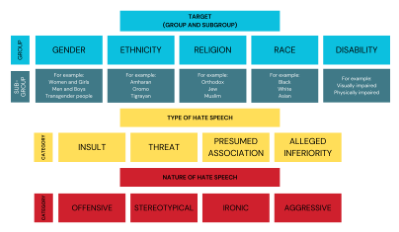
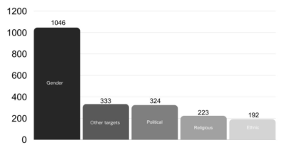
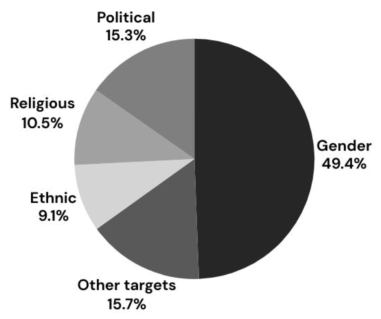
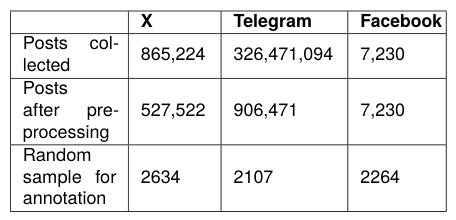
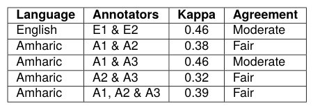
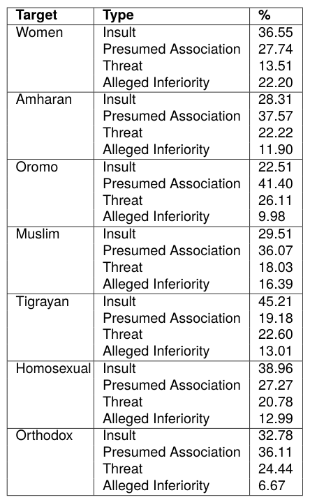

RAIL 2024Traduction automatique
Ressources pour l'annotation des discours de haine sur les plateformes de médias sociaux utilisées en Éthiopie : un lexique novateur et un schéma d'étiquetage
Traduction automatique, non relue par un humain. L'article original est la version de référence ; les phrases soulignées sont celles dont les contrôles automatiques n'étaient pas sûrs.
Proceedings of the Fifth Workshop on Resources for African Indigenous Languages @ LREC-COLING 2024.
Traduction par Ernst van Gassen (Arktos AI Lab), sous licence CC BY-NC 4.0 comme l'original. Réutilisation permise avec attribution, à usage non commercial uniquement. Les auteurs originaux n'ont pas relu ni approuvé cette traduction.
Texte brut réutilisable, avec sa licence : Français · LICENCE
Affiliations
Nuhu Ibrahim†, Felicity Mulford†, Matt Lawrence† and Riza Batista-Navarro†,‡
†Centre for Information Resilience, London, UK
‡Department of Computer Science, The University of Manchester, UK
Adresses e-mail retirées pour la protection de la vie privée. Elles figurent dans le PDF original.
Résumé
Le discours de haine sur les médias sociaux a proliféré en Éthiopie. Pour soutenir les études visant à examiner les cibles et les types de discours de haine circulant dans le contexte éthiopien, nous avons développé un nouveau schéma d'annotation détaillé qui capture trois éléments du discours de haine : la cible (c'est-à-dire tout groupe ayant des caractéristiques protégées), le type (c'est-à-dire la méthode d'abus) et la nature (c'est-à-dire le style du langage utilisé). Nous avons également développé un nouveau lexique de mots-clés liés au discours de haine dans les quatre langues les plus en vue des médias sociaux éthiopiens: amharique, afaan oromo, anglais et tigrigna. Ces mots-clés nous ont permis de récupérer des publications de médias sociaux (également dans les quatre mêmes langues) sur trois plateformes (à savoir X, Telegram et Facebook), susceptibles de contenir des discours de haine. Des experts du contexte éthiopien ont ensuite annoté manuellement un échantillon de ces publications récupérées, obtenant une concordance inter-juges allant de passable à modérée. Les annotations résultantes ont servi de base à une étude de cas sur les groupes qui tendent à être ciblés par des types particuliers de discours de haine ou par des styles particuliers de langage de haine.
Mots-clés
Discours de haine, langues éthiopiennes, médias sociaux, schéma d'annotation, développement du lexique
1. Introduction
Les plateformes de médias sociaux sont devenues de puissants outils de communication, permettant aux individus d'exprimer leurs opinions, d'échanger des informations et de participer à des discussions diverses (Poell and Van Dijck, 2015). Néanmoins, l’environnement sans restriction de ces plateformes a également favorisé la propagation du discours de haine, présentant des obstacles notables à la cohésion sociale, en particulier dans des contextes culturellement divers comme l’Éthiopie. Avec l'essor de la communication numérique qui a encouragé l'entremêlement de la vie personnelle et publique en ligne, les discours de haine ont découvert de nouveaux canaux de propagation, ciblant fréquemment les communautés marginalisées ou les groupes minoritaires (Kovács et al., 2021) et intensifiant les divisions sociales (Targema et Lucas, 2018).
L'Éthiopie, un pays connu pour sa riche diversité linguistique et culturelle, a été témoin de la rapide propagation des discours de haine sur les plateformes de médias sociaux telles que Twitter, Telegram et Facebook (Delelegn, 2021). Les événements récents, y compris la violence interethnique et l'instabilité politique, ont souligné l'impact destructeur des discours de haine en ligne sur la société éthiopienne. Par exemple, l'escalade des tensions entre les groupes ethniques dans diverses régions a été alimentée, en partie, par la diffusion des discours de haine et des discours incendiaires sur les plateformes de médias sociaux (Delelegn, 2021).
Les langues minoritaires continuent de faire face à une pénurie de ressources informatiques pour recueillir et analyser de vastes ensembles de données textuelles, ce qui se traduit par des ressources minimales ou inexistantes pour détecter automatiquement les discours de haine sur les médias sociaux (El-Haj et al., 2015; Kovács et al., 2021). Cette recherche vise à développer un système d'étiquetage à grains fins pour annoter les discours de haine. Le schéma d'étiquetage aide à produire un ensemble de données de discours de haine richement annoté qui n'identifie pas seulement la haine mais aussi les groupes ciblés avec des caractéristiques protégées, ainsi que le type et la nature du discours de haine. En outre, cette recherche vise à développer un lexique dans quatre langues (amharique, Afaan Oromo, anglais et Tigrigna) qui sont indicatifs du discours de haine selon des lignes de genre, ethniques et religieuses, qui, à notre connaissance, est actuellement le plus complet pour le contexte éthiopien.
Cette recherche s'appuie sur une étude antérieure menée par le Centre for Information Resilience (CIR) qui a examiné les expériences vécues et les impacts durables des abus en ligne par le biais d'une revue de la littérature existante et d'entretiens avec 14 femmes occupant des positions importantes dans les médias, la société civile et d'autres rôles publics en Éthiopie (Centre for Information Resilience, 2023). Leurs conclusions mettent en évidence la toxicité des environnements en ligne, et les personnes interrogées ont révélé que les abus et le harcèlement en ligne dont elles ont été victimes ont eu des répercussions dans le monde réel, notamment des dommages psychologiques, une réputation professionnelle endommagée, une vie familiale perturbée et le silence des femmes en ligne et hors ligne. Compte tenu de la gravité du discours de haine qui prolifère sur Internet dans les langues minoritaires et de son impact sur les événements en Éthiopie, nous soutenons qu’il est urgent de développer des ressources qui permettront le développement de méthodes de traitement du langage naturel (TALN) qui peuvent aider à détecter automatiquement de tels discours de haine. À cette fin, nous présentons : (1) un schéma d'annotation à grain fin pour étiqueter les discours de haine circulant sur les plateformes de médias sociaux utilisées en Éthiopie ; (2) un nouveau lexique de mots-clés liés aux discours de haine, couvrant les termes inflammatoires utilisés en amharique, en afaan oromo, en anglais et en tigrigna ; et (3) un corpus de publications sur les médias sociaux annotées sur la base du schéma d'annotation à grain fin.
2. Le contexte éthiopien
Cette recherche a utilisé la définition du discours de haine du gouvernement éthiopien, telle qu'énoncée dans la Proclamation sur la prévention et la répression du discours de haine et de la désinformation (no 1185/2020) (République démocratique fédérale d'Éthiopie, 2020), qui le définit comme « un discours qui encourage délibérément la haine, la discrimination ou les attaques contre une personne ou un groupe d'identité discernable, fondé sur l'appartenance ethnique, la religion, la race, le genre ou le handicap ».
Dans notre étude, nous avons exploré le discours de haine sur les plateformes de médias sociaux couramment utilisées en Éthiopie. Nous avons méticuleusement adhéré à la définition du discours de haine donnée par le Gouvernement éthiopien, comme indiqué ci-dessus. L'Éthiopie est extrêmement diversifiée en termes de langues utilisées, avec plus de 80 langues parlées (Leyew, 2020). Pour des raisons de faisabilité et de contraintes de ressources, nous avons décidé de nous concentrer sur l'analyse du contenu dans seulement quatre langues prédominantes : l'amharique, l'afaan oromo, l'anglais et le tigrigna. La sélection de ces langues a été guidée par leur importance sur les plateformes de médias sociaux dans le pays (Zelalem, 2010).
Pendant ce temps, trois plates-formes en ligne différentes ont été choisies comme source du contenu pour l'analyse, à savoir X (anciennement Twitter), Telegram et Facebook. Ces plateformes ont été sélectionnées en raison de leur usage répandu en Éthiopie (Daracho, 2020; Asale, 2020), ainsi que des possibilités offertes par leurs politiques en matière de collecte de données et de traitement (Sosa and Sharoff, 2022; Giglietto et al., 2012). En outre, il s’agissait de trois sites qui ont été signalés par les personnes interrogées (dans les recherches antérieures du CIR) comme étant les environnements dans lesquels elles étaient confrontées à des abus en ligne (Centre for Information Resilience, 2023).
3. Travaux connexes
Le développement de schémas d'étiquetage et de lexiques du discours de haine pour les langues éthiopiennes dans le domaine du TAL a suscité une attention croissante ces dernières années, motivé par la reconnaissance grandissante de la diversité linguistique et de la richesse culturelle de l'Éthiopie. Bien qu’il y ait peu de littérature spécifiquement consacrée à ce sujet, plusieurs efforts connexes ont fourni des informations précieuses sur les défis, les méthodologies et les approches pertinentes aux systèmes d’étiquetage des discours de haine et au développement de lexiques pour les langues éthiopiennes.
Peace Tech Lab (2023) a rapporté environ 21 termes inflammatoires, leurs orthographes associées et termes connexes, leurs significations et les raisons pour lesquelles ces termes sont inflammatoires. Ils ont également fourni 16 termes supplémentaires qui sont offensants et qui devraient être surveillés. Minale (2022) a compilé des mots-clés haineux en amharique et leur traduction en anglais, puis a regroupé les mots-clés en catégories, à savoir, les mots-clés liés à la 'nation éthiopienne', au 'genre', aux 'haineux', aux 'offensants' et aux 'religieux'. Ils ont utilisé ces mots-clés pour collecter automatiquement des données amhariques à partir de trois sites de médias sociaux: Facebook, Twitter et YouTube. Ces ensembles de données ont ensuite été classés par des annotateurs humains en quatre catégories : « discours normal », « discours de haine raciale », « discours de haine religieuse », « discours de discrimination sexuelle » et « discours de haine du handicap ».
Pendant ce temps, Jha et Mamidi (2017) ont recueilli des messages sexistes en anglais sur Twitter en faisant correspondre des termes ou des hashtags qui sont généralement utilisés lorsqu'ils affichent ce qu'ils appellent le « sexisme bienveillant ». Certains de ces termes et hashtags étaient: "aussi bon qu'un homme", "comme un homme", "pour une fille", "intelligent pour une fille", "amour d'une femme", "#adaywithoutwomen", "#womensday", "#everydaysexism" et "#weareequal". Les publications collectées ont été annotées manuellement et ont été utilisées pour entraîner un modèle basé sur l'apprentissage automatique afin de classer les publications en trois catégories ('Hostile', 'Benevolent', 'Others') en fonction du type de sexisme qu'elles exhibent. Similaire à Minale (2022), le travail de Jha et Mamidi (2017) a créé des mots-clés sexistes en amharique et les a utilisés pour collecter des publications sur Twitter ; ils ont également construit divers modèles de classification.
Certains travaux antérieurs se sont concentrés sur l'analyse des discours de haine pour les langues éthiopiennes. Par exemple, Getachew (2020) et Ayele et al. (2022) ont enquêté sur le discours de haine amharique. Kanessa et Tulu (2021) et Defersha et Tune (2021) se sont concentrés sur le discours de haine en Afaan Oromo tandis que Bahre (2022) a étudié le discours de haine en Tigrigna.
Nous avons constaté que la plupart des chercheurs dans le contexte éthiopien se sont concentrés sur le traitement des lexiques du discours de haine pour l’amharique, et que seuls des efforts limités ont tenté de traiter les lexiques du discours de haine pour d’autres langues éthiopiennes, par exemple, l’afaan oromo, le tigrigna et l’anglais (comme utilisé dans le contexte éthiopien). En revanche, notre travail a organisé des lexiques de discours de haine pour plusieurs langues éthiopiennes: amharique, Afaan Oromo, anglais et Tigrigna. Ces langues sont les plus utilisées sur les plateformes de médias sociaux dans le pays (Zelalem, 2010).
De plus, la plupart des schémas d'étiquetage développés pour les langues éthiopiennes ne classaient les discours de haine que comme 'haine' ou 'pas de haine'. Certaines études, comme celle de Minale (2022), sont allées plus loin en définissant des catégories de discours de haine : « discours normal », « discours de haine raciale », « discours de haine religieuse », « discours de discrimination fondée sur le genre » et « discours de haine fondé sur le handicap ». Jha et Mamidi (2017) ont également catégorisé les messages haineux/sexistes en « hostiles », « bienveillants » ou « autres », mais ils se sont concentrés uniquement sur l'identification du sexisme. Notre recherche va au-delà des travaux existants dans le développement d'un système d'étiquetage à grains fins qui identifie trois éléments dans les messages haineux: la cible, le type et la nature du discours de haine.
4. Schéma d'annotation
Les schémas d'annotation contiennent généralement un ensemble de directives ou de règles utilisées pour annoter ou étiqueter des données avec des informations ou des attributs spécifiques (Bird et al., 2009). Cette section traite du développement d'un schéma d'étiquetage à grain fin pour l'étiquetage des discours de haine sur les plateformes de médias sociaux dans le contexte éthiopien.
Conformément à la définition du discours de haine dans le contexte éthiopien, énoncée à la section 2, pour qu’un message soit considéré comme contenant un discours de haine, il doit être ciblé sur un individu ou un groupe ayant une caractéristique protégée. Lorsqu'un message contient un discours de haine, notre système d'étiquetage exige que les annotateurs étiquetent trois éléments dans le message: la cible, le type et la nature du discours de haine. Nous renvoyons le lecteur à la figure 1) pour un diagramme qui fournit un aperçu des étiquettes dans notre schéma d'annotation. Dans notre travail, le type de discours de haine fait référence à la méthode d'abus (comme les menaces), tandis que la nature fait référence au style utilisé dans le langage qui exprime l'abus (comme l'ironie ou les stéréotypes).
Pour capturer les informations sur la cible des discours de haine, les mots qui indiquent quel individu/groupe est visé doivent être assignés à l'une des étiquettes suivantes :
- Genre : une personne ou un groupe de personnes d'un genre particulier.
- Ethnicité: Un individu ou un groupe de personnes qui viennent d'un lieu particulier d'origine et de culture.
- Religion : Un individu ou un groupe de personnes appartenant à un groupe religieux particulier.
- Race: Un individu ou un groupe de personnes possédant des traits physiques distinctifs associés à une race particulière.
- Handicap: Un individu ou un groupe de personnes possédant un handicap particulier.

Figure 1: Vue d'ensemble des catégories dans notre schéma d'annotation.
En outre, pour recueillir des renseignements sur le type de discours, les mots qui décrivent la méthode d’abus devraient se voir attribuer l’une des étiquettes suivantes :
- Insulte: Insultes ou expressions dénigrantes contre un individu/groupe en raison de caractéristiques protégées.
- Menace : Intimidation, menaces ou incitation à la haine, à la violence ou à la violation des droits des individus, en raison de caractéristiques protégées.
- Association présumée: Association présumée de caractéristiques protégées avec des connotations négatives.
- Infériorité présumée: références à l'infériorité (ou la supériorité) présumée d'un individu / groupe avec une caractéristique protégée.
Enfin, la nature ou le style du discours de haine varie souvent d’un post à l’autre. Bien qu'elle ne soit pas essentielle pour la classification du discours de haine, la collecte d'informations sur le style permet de saisir les nuances du langage utilisé pour exprimer la haine. Pour capturer ces informations, le langage contenant de la haine doit être étiqueté comme l'un des suivants :
- Agressif: Comprend un langage fort qui cherche à intimider physiquement, menacer ou inciter à la violence physique contre le destinataire, ou qui demande, suggère ou favorise une violation des droits du destinataire.
- Offensant : Plusieurs formes différentes de discours, allant du langage insultant, méprisant ou dénigrant, à l'association de la cible (individu ou groupe) avec des traits personnels nuisibles ou faux, ou suggérant l'infériorité de la cible.
- Ironique: Comprend des blagues, des satires ou des messages sarcastiques qui ciblent une caractéristique protégée du destinataire et pourraient être nocifs. Le contenu haineux est parfois transmis à l'aide de nuances dans le langage, telles que le sarcasme, l'humour ou la satire.
- Stéréotypé : Correspond à des références implicites ou explicites à des croyances ou préjugés stéréotypés à l'égard d'un individu/groupe ayant des caractéristiques protégées.
Le schéma d'étiquetage garantit qu'une équipe d'annotateurs multilingues ait une compréhension partagée de ce que les étiquettes constituent comme discours de haine. De plus, lorsqu'il est utilisé, le schéma d'étiquetage produit un riche jeu de données de discours de haine qui indiquera non seulement si une publication contient de la haine, mais aussi la catégorie cible des caractéristiques protégées recevant la haine, ainsi que le type et la nature de la haine reçue. Cela aidera à répondre à des questions substantielles comme :
- Dans quelle mesure les groupes ayant des caractéristiques protégées particulières, par exemple, le genre, la religion, l'origine ethnique, la race, etc., reçoivent-ils de la haine sur les médias sociaux ?
- Quels types et natures de discours de haine sont prévalents ?
- Certaines caractéristiques protégées reçoivent-elles plus de haine sur les médias sociaux que d’autres?
- Comment le discours de haine varie-t-il entre les sous-groupes cibles, c’est-à-dire les femmes, les hommes et les homosexuels pour la catégorie de genre?
- Comment le discours de haine varie-t-il lorsque plusieurs caractéristiques protégées sont ciblées (c'est-à-dire le discours de haine qui cible des individus/groupes selon plusieurs axes identitaires) ?
5. Étude de cas
Notre schéma d'annotation a été appliqué à une étude de cas visant à examiner quels groupes ayant des caractéristiques protégées ont souvent été ciblés par des discours de haine dans le contexte éthiopien, ainsi que le type et la nature du langage qui leur est adressé. Cette section décrit les étapes que nous avons suivies pour collecter et annoter des données provenant de diverses plateformes de médias sociaux en soutien à l'étude de cas.
5.1. Collecte des données
Nous avons collecté deux types de données : des mots-clés qui forment un nouveau lexique du discours de haine éthiopien, et des publications de médias sociaux formant un nouveau corpus de discours de haine.
5.1.1. Développement du lexique
Compte tenu du volume énorme de publications sur les médias sociaux publiées quotidiennement, nous avons développé un lexique de mots-clés pour faciliter la collecte de publications susceptibles de contenir du discours de haine. Plus précisément, nous avons recueilli des mots-clés dans quatre langues - amharique, afaan oromo, anglais et tigrigna - qui sont indicatifs de discours de haine le long de lignes genrées, ethniques et religieuses.
Le lexique a été développé grâce à des recherches en bureau qui ont employé à la fois l'identification et l'affinement de lexiques existants de discours de haine (Minale, 2022; Degu, 2022; Getachew, 2020; James, 1998; Jha et Mamidi, 2017; Gashe, 2022; Gao et al., 2017; Peace Tech Lab, 2023; Hatebase.org, 2023; Thalikir, 2016; Centre, 2021; Shariatmadari, 2016; Center for the Advancement of Rights and Democracy, 2023), l'identification d'autres mots-clés et récits lors d'entretiens semi-structurés en personne réalisés lors de l'étude antérieure du CIR (Centre for Information Resilience, 2023) et une table ronde qui a rassemblé 21 individus issus d'une variété d'organisations de la société civile, d'agences des Nations Unies et de groupes de défense des droits des femmes et des filles.
Une première version du lexique a été partagée avec les partenaires, les parties prenantes et les participants à la table ronde en Éthiopie pour recueillir leurs commentaires. Il est devenu évident à ce stade qu'il y avait confusion quant à savoir pourquoi certains termes avaient été inclus dans le lexique, car ils ne peuvent pas, à eux seuls, constituer un discours de haine. Il a été précisé aux parties prenantes que les mots-clés seront utilisés uniquement pour collecter le plus de messages possible (une approche à rappel élevé mais à faible précision), et l’inspection manuelle est toujours nécessaire, car nous reconnaissons que, comme avec tout dictionnaire, de nombreux mots-clés sont ambigus et donc leur présence dans un message ne signifie pas nécessairement que le message contient un discours de haine. Par conséquent, les annotateurs humains analyseront si le contenu contient effectivement des discours de haine, selon le schéma d'étiquetage développé.
Le lexique résultant se compose de 2 058 mots-clés inflammatoires dans les quatre langues relevant du champ de cette étude. Nous pensons qu'il s'agit, à ce jour, du lexique le plus complet pour le contexte éthiopien. Les figures 2 et 3 montrent respectivement le nombre et la distribution des mots-clés organisés pour chaque caractéristique protégée.

Figure 2 : Nombre de mots-clés sélectionnés pour chaque caractéristique protégée

Figure 3 : Distribution des mots-clés sélectionnés pour chaque caractéristique protégée
5.1.2. Collecte des données
Les publications sur les médias sociaux ont été recueillies sur les plateformes d’intérêt, à savoir X (anciennement Twitter), Telegram et Facebook. Pour collecter des données à partir de X, l'outil d'analyse des médias sociaux Meltwater a été utilisé. Meltwater prend en charge l'utilisation de la recherche par mots-clés pour les tweets publiés il y a moins de 18 mois à partir de la date de recherche. Afin de garantir l'obtention d'un échantillon pertinent, seuls les posts en anglais ont été récupérés s'ils provenaient d'Éthiopie.
En collectant des données depuis Telegram, les API officielles de Telegram ont été utilisées. Comme Telegram ne prend en charge que les recherches au sein des chaînes Telegram auxquelles un utilisateur appartient, des experts des médias sociaux d'Éthiopie ont été engagés pour méticuleusement dresser une liste des chaînes Telegram publiques largement populaires et influentes en Éthiopie. Par la suite, nous avons rejoint un total de 285 chaînes Telegram; les messages Telegram de ces chaînes contenant des mots-clés dans notre lexique ont été collectés.
Pour extraire des données de Facebook, des experts des médias sociaux d'Éthiopie ont été de nouveau sollicités pour sélectionner une liste de groupes et de profils Facebook éthiopiens publics et influents. À la suite de cet engagement, une liste de 300 profils ou groupes Facebook a été organisée et des messages de ces groupes contenant des mots-clés dans notre lexique ont été collectés.
5.1.3. Prétraitement des données
Le prétraitement des données est une étape cruciale qui consiste à nettoyer, transformer et organiser les données textuelles brutes pour les rendre adaptées à l'analyse (Tabassum et Patil, 2020).
Les données textuelles recueillies à partir des médias sociaux contiennent souvent des informations non pertinentes ou erronées qui compliquent l’analyse ou l’interprétation. Pour atténuer ce problème, nous avons effectué les tâches suivantes sur les ensembles de données de X, Telegram et Facebook :
- Suppression des balises HTML et des caractères spéciaux.
- Mise en minuscules du texte (c'est-à-dire rendre tous les caractères en minuscules) pour garantir l'insensibilité à la casse.
- Suppression ou remplacement de la ponctuation.
- Suppression des messages en double.
Les tâches de nettoyage suivantes ont été effectuées uniquement sur les ensembles de données en langue anglaise:
- Suppression des valeurs numériques, des dates et d'autres informations non textuelles.
- Suppression des mots vides qui ne portent pas de sens significatif (par exemple, "and", "the", "in").
- Normalisation des abréviations et acronymes.
5.1.4. Anonymisation des données
Tous les noms d'utilisateur dans les messages ont été anonymisés conformément aux exigences éthiques, afin de protéger la vie privée et la confidentialité des personnes dont les données sont utilisées à des fins de recherche et d'analyse. Cela a été fait en remplaçant tous les noms d'utilisateur, c'est-à-dire tout mot apparaissant après le symbole '@' par le mot "USERNAME".
5.1.5 Échantillonnage en vue d'analyses complémentaires
Le processus de collecte de données a permis de recueillir des dizaines de millions de messages, comme l'illustre le tableau 1. Même après un prétraitement approfondi des données, qui a consisté à supprimer les doublons et les messages excessivement courts, il restait plus de 5 millions de messages.
En raison des contraintes posées par les ressources humaines limitées disponibles pour l'annotation manuelle afin de déterminer le contenu haineux, nous avons sélectionné un échantillon aléatoire pour obtenir des ensembles de données plus gérables. Le tableau 1 montre le nombre de publications résultant de chaque étape du processus de préparation des données et le nombre de publications choisies pour l'analyse ultérieure.
5.2 Tâche d'annotation
La tâche d'annotation implique de recruter des annotateurs humains compétents, familiers avec le domaine d'intérêt, pour utiliser le schéma d'étiquetage développé afin de déterminer si les publications du jeu de données collecté contiennent du discours de haine. Les annotateurs ont utilisé Doccano (Nakayama et al., 2018), un outil d'annotation open-source que nous avons employé pour étiqueter les publications dans nos jeux de données selon notre schéma d'annotation, c'est-à-dire pour annoter les cibles de discours de haine (caractéristiques protégées), le type et la nature du discours de haine.

Tableau 1 : Le nombre de publications obtenues à chaque étape du processus de préparation des données.
6. Résultats des annotations
Pour garantir la cohérence dans l'application du schéma d'étiquetage fin, il était essentiel de calculer les scores de concordance inter-juges (IAA).
Deux annotateurs humains ont été recrutés pour annoter les messages en anglais choisis au hasard. L'annotateur principal, qui a participé au développement du schéma d'étiquetage fin et qui est connaisseur du contexte éthiopien, était responsable de l'annotation de l'ensemble des publications en anglais sélectionnées. Pour permettre l'estimation de l'IAA, un annoteur secondaire a été assigné pour annoter 10% de l'ensemble de données annotées par l'annoteur primaire.
Pour l'amharique, l'annotateur principal, un locuteur natif de l'amharique avec une expérience en analyse des médias sociaux, a réalisé l'annotation de l'ensemble du jeu de données amhariques, tandis que les deux autres annotateurs (qui se sont vu confier les jeux de données tigrigna et afaan oromo) ont été chargés d'annoter environ 10 % du jeu de données annoté par l'annotateur principal. L'IAA a ensuite été estimé à l'aide des publications annotées par les trois annotateurs afin d'évaluer le niveau d'accord et de cohérence.
Pour l'Afaan Oromo et le Tigrigna, un annotateur a été recruté par langue. L'IAA a été jugée inutile pour les annotateurs, car ces mêmes annotateurs avaient déjà travaillé sur l'annotation du jeu de données amharique, et les résultats de l'accord IAA sur le jeu de données amharique indiquaient leur compétence dans l'identification du discours de haine, l'étiquetage de sa cible, la catégorisation des types de discours et l'évaluation du sentiment de haine.
L'IAA a été calculée à l'aide des métriques de Cohen's Kappa (k) et de Fleiss' Kappa. Les scores d'IAA, présentés dans le Tableau 2, ont montré un accord faible à modéré entre les annotateurs (Landis et Koch, 1977).

Tableau 2 : Résultat et interprétation de l'estimation de la concordance inter-juges entre annotateurs en termes de scores Kappa.
7. Discussion
Le lexique obtenu couvre un pourcentage plus élevé de mots-clés liés au genre (49,4 %) par rapport à ceux liés à l'ethnicité (9,1 %) ou à la religion (10,5 %) ; voir les figures 2 et 3. Malgré ce déséquilibre, il convient de noter que le corpus de publications de médias sociaux construit à partir de notre lexique a néanmoins révélé une plus grande prévalence de discours de haine ciblant d'autres groupes identitaires, comme l'illustre la Figure 4. Par exemple, sur l'ensemble des publications du jeu de données complet, les discours de haine ethnique représentaient 44,5 %, tandis que les discours de haine fondés sur le genre et les discours de haine religieuse représentaient respectivement 30,2 % et 17,5 %. La haine raciale et le discours de haine ciblant les personnes handicapées représentaient une plus petite proportion du jeu de données (4,6 % et 0,3 %, respectivement).

Figure 4 : Distribution des publications contenant de la haine selon la cible de la haine.
Comme on peut le voir dans la Figure 5, lorsque les groupes de caractéristiques protégées sont décomposés en cibles de haine individuelles, d'autres tendances intéressantes deviennent visibles. Les groupes les plus ciblés sont les femmes et les filles (21 % de l’ensemble des données), suivies de près par les Oromos (19,1 %) et les Amharans (16,7 %). Comme le lexique comprenait plus de mots-clés liés au genre, cela n'est pas surprenant. D'autres cibles de discours de haine dans le jeu de données, bien que dans des proportions plus faibles, incluent les chrétiens orthodoxes (8,7 %), les hommes (5,9 %) et les Tigréens (5,5 %).
La catégorie « autres cibles de haine » (dans la Figure 5) est composée de tous les autres groupes cibles en dehors des 7 cibles les plus prévalentes ; cela inclut les protestants, les personnes blanches, les personnes transgenres, les athées, les Arabes, les personnes multiraciales et les Juifs. La catégorie « autre cible » a été sélectionnée dans les cas où un discours de haine ciblant une caractéristique protégée était présent, mais ne relevait d'aucune des catégories.

Figure 5 : Distribution des publications contenant de la haine selon la cible de haine spécifique.
Le tableau 3 montre que les femmes et les filles reçoivent proportionnellement plus de discours de haine insultants (36,55 %) que les Amharas (28,31 %), les musulmans (29,51 %) et les Oromos (22,51 %). Elles reçoivent moins de discours de haine insultants comparé aux personnes homosexuelles (38,96 %) et aux Tigréens (45,21 %). De plus, les femmes et les filles reçoivent proportionnellement plus de haine contenant une prétendue infériorité (22,2 %), suivies des musulmans (16,39 %), des Amharas (11,90 %), des homosexuels et des Tigréens (12,99 % et 13,01, respectivement), et des Oromos (9,98 %). Inversement, les femmes et les filles reçoivent (proportionnellement) le moins de menaces (13,51 %) par rapport aux Oromos (26,11 %), aux Amhariens (22,22 %), aux Tigréens (22,6 %), aux homosexuels (20,78 %) et aux musulmans (18,03 %). Les femmes et les filles sont également parmi les sous-groupes cibles de la haine qui reçoivent proportionnellement moins de haine contenant une association présumée (27,74%), par rapport aux Amhares (37,57%), aux Musulmans et aux Oromos (36,07% et 41,4%, respectivement).
Intéressamment, il a été identifié que le langage offensant est la nature ou le style de discours de haine le plus répandu parmi toutes les cibles de haine analysées (voir Tableau 4). Contrairement à la tendance observée dans le langage offensant, les femmes et les filles reçoivent la plus forte proportion de langage stéréotypé (26,17%), suivies de près par les homosexuels (22,81%), puis les musulmans (12,5%), les amhariens (9,27%), les oromos (4,98%) et les tigrayans (2,65%). Seuls les musulmans reçoivent une proportion plus élevée de langage ironique (21,25 %) que les femmes et les filles (20,37 %). Néanmoins, les femmes et les filles sont considérablement plus ciblées par le langage ironique que les Tigrayens (11,5 %), les homosexuels (8,77 %), les Amharas (6,85 %) et les Oromos (5,32 %).

Tableau 3 : Nombre de publications contenant de la haine selon la cible (top 7) et le type de discours de haine.
8. Conclusion
Dans notre recherche, nous avons développé un schéma d'annotation à grain fin pour étiqueter les discours de haine dans les publications sur les plateformes de médias sociaux utilisées en Éthiopie. Le schéma d'annotation a servi de base à la production d'un corpus de discours de haine richement annoté qui n'identifie pas seulement les publications contenant de la haine mais aussi les caractéristiques protégées ciblées, le type de haine, et la nature du langage utilisé dans les discours de haine.
De plus, cette recherche a produit un lexique couvrant quatre langues utilisées en Éthiopie, à savoir l'amharique, l'afaan oromo, l'anglais et le tigrigna, qui contient des mots-clés indicatifs de discours de haine selon des lignes genrées, ethniques et religieuses. À notre connaissance, ce lexique est actuellement le plus complet pour le contexte éthiopien. Nos travaux futurs seront axés sur l’étude de la manière dont le corpus annoté résultant de cette étude peut permettre le développement de modèles basés sur l’apprentissage automatique capables de détecter et de catégoriser automatiquement les discours de haine, ainsi que d’identifier automatiquement les cibles spécifiques des discours de haine.

Tableau 4 : Nombre de publications contenant de la haine selon la cible (7 premières) et la nature du discours de haine.
Déclaration éthique
Le Centre for Information Resilience (CIR) suit le Berkeley Protocol on Digital Open-Source Investigations. Pour cette étude, le soin a été pris d’anonymiser les données et de respecter les conditions générales des plateformes. Pour atténuer l'impact du traumatisme vicariant, les annotateurs ont bénéficié d'un soutien individuel de la part de la coordinatrice de recherche du CIR (la deuxième auteure de cet article). Cela visait à garantir que les annotateurs ne soient pas directement affectés par l'exposition aux discours de haine. Les annoteurs ont également été informés qu’ils ont accès à des ressources appropriées au cas où une aide professionnelle serait nécessaire.
Remerciements
Nous tenons à remercier Adyam Solomon Tesfay, Alemu Teshome Baki et Fasika Tadesse pour leur travail acharné en tant qu’annotateurs de nos ensembles de données.
Ce matériel a été financé par le développement international du Royaume-Uni, issu du gouvernement britannique ; cependant, les opinions exprimées ne reflètent pas nécessairement les politiques officielles du gouvernement britannique.
Notes
1 https://github.com/Centre-for-Information-Resilience/ethiopia-hate-speech-lexicon
2 Bien que la définition du discours de haine du gouvernement éthiopien (République fédérale démocratique d'Éthiopie, 2020) ne fasse pas explicitement référence à l'identité sexuelle, nous avons intégré l'identité sexuelle dans cette catégorie pour capturer la haine fondée sur l'orientation sexuelle.
3 https://explore.meltwater.com/meltwater-media-monitoring
4 https://core.telegram.org/
Références bibliographiques
Moges Ayele Asale. 2020. The Tributes and Perils of Social Media Use Practices in Ethiopian Sociopolitical Landscape. In Proceedings of the 22nd HCI International Conference, volume 12427, page 199, Copenhagen, Denmark. Springer Nature.
Abinew Ali Ayele, Skadi Dinter, Tadesse Destaw Belay, Tesfa Tegegne Asfaw, Seid Muhie Yimam, and Chris Biemann. 2022. The 5Js in Ethiopia: Amharic Hate Speech Data Annotation using Toloka Crowdsourcing Platform. In Proceedings of the 2022 International Conference on Information and Communication Technology for Development for Africa, pages 114-120. IEEE.
Weldemariam Bahre. 2022. Hate speech detection from Facebook social media posts and comments in Tigrigna language. Ph.D. thesis, St. Mary's University.
Steven Bird, Ewan Klein, and Edward Loper. 2009. Natural Language Processing with Python: Analyzing Text with the Natural Language Toolkit. O'Reilly Media, Inc.
Center for the Advancement of Rights and Democracy. 2023. CARD's Bi-weekly Social Media Conversation Sensitivity Report.
The Wilson Centre. 2021. Malign Creativity: How Gender, Sex, and Lies are Weaponized Against Women and girls Online.
Centre for Information Resilience. 2023. Silenced, shamed, and threatened: The online abuse of women who participate in Ethiopian public life.
Lisanu Damene Daracho. 2020. Social Media Impact on Social Life of Public Servant in Mari Mansa District, Dawuro Zone, Southern Region, Ethiopia. New Media and Mass Communication, 93:1-7.
NB Defersha and KK Tune. 2021. Detection of Hate Speech Text in Afan Oromo Social Media Using Machine Learning Approach. Indian J Sci Technol, 14(31):2567-78.
Mekuanent Degu. 2022. Amharic dataset for hate speech detection. Mendeley Data.
Misganaw Delelegn. 2021. Hate Speech Regulation in Ethiopia: Lessons to Be Learned From Other Jurisdictions. Ph.D. thesis, Bahir Dar University.
Mahmoud El-Haj, Udo Kruschwitz, and Chris Fox. 2015. Creating language resources for underresourced languages: methodologies, and experiments with Arabic. Language Resources and Evaluation, 49:549-580.
Federal Democratic Republic of Ethiopia. 2020. Hate Speech and Disinformation Prevention and Suppression Proclamation (No. 1185/2020).
Lei Gao, Alexis Kuppersmith, and Ruihong Huang. 2017. Recognizing Explicit and Implicit Hate Speech Using a Weakly Supervised Two-path Bootstrapping Approach. In Proceedings of the 8th International Joint Conference on Natural Language Processing, pages 774-782, Taipei, Taiwan. Asian Federation of Natural Language Processing.
S. M. Gashe. 2022. Hate Speech Detection and Classification System in Amharic Text with Deep Learning. List of Amharic Hate Speech Keywords (Lexicons).
Surafel Getachew. 2020. Amharic Facebook Dataset for Hate Speech detection. Mendeley Data.
Fabio Giglietto, Luca Rossi, and Davide Bennato. 2012. The Open Laboratory: Limits and Possibilities of Using Facebook, Twitter, and YouTube as a Research Data Source. Journal of Technology in Human Services, 30(3-4):145-159.
Hatebase.org. 2023. Hatebase.org.
Deborah James. 1998. Gender-linked derogatory terms and their use by women and men. American Speech, 73(4):399-420.
Akshita Jha and Radhika Mamidi. 2017. When does a compliment become sexist? Analysis and classification of ambivalent sexism using twitter data. In Proceedings of the 2nd Workshop on NLP and Computational Social Science, pages 7-16.
Lata Guta Kanessa and Solomon Gizaw Tulu. 2021. Automatic Hate and Offensive speech detection framework from social media: the case of Afaan Oromoo language. In Proceedings of the 2021 International Conference on Information and Communication Technology for Development for Africa, pages 42-47. IEEE.
György Kovács, Pedro Alonso, and Rajkumar Saini. 2021. Challenges of hate speech detection in social media: Data scarcity, and leveraging external resources. SN Computer Science, 2:1-15.
J. Richard Landis and Gary G. Koch. 1977. The measurement of observer agreement for categorical data. Biometrics, 33(1):159-174.
Zelealem Leyew. 2020. Language and society in Ethiopia. Bulletin of the Department of Linguistics and Philology 40 years, page 64.
Samuel Minale. 2022. Amharic Social Media Dataset for Hate Speech Detection and Classification in Amharic Text with Deep Learning. Mendeley Data.
Hiroki Nakayama, Takahiro Kubo, Junya Kamura, Yasufumi Taniguchi, and Xu Liang. 2018. doccano: Text Annotation Tool for Human.
Peace Tech Lab. 2023. Hateful Speech and Conflict in the Federal Democratic Republic of Ethiopia: A lexicon of hateful of inflammatory words and Phrases.
Thomas Poell and José Van Dijck. 2015. Social media and activist communication. The Routledge companion to alternative and community media, pages 527-537.
David Shariatmadari. 2016. Eight words that reveal the sexism at the heart of the English language.
Jose Sosa and Serge Sharoff. 2022. Multimodal Pipeline for Collection of Misinformation Data from Telegram. In Proceedings of the 13th Language Resources and Evaluation Conference, pages 1480-1489, Marseille, France. European Language Resources Association.
Ayisha Tabassum and Rajendra R Patil. 2020. A Survey on Text Pre-Processing & Feature Extraction Techniques in Natural Language Processing. International Research Journal of Engineering and Technology, 7(06):4864-4867.
Tordue Simon Targema and Joseph M Lucas. 2018. Hate speech in readers' comments and the challenge of democratic consolidation in Nigeria: A critical analysis. Jurnal Pengajian Media Malaysia, 20(2):23-38.
Thalikir. 2016. Everyday misogyny: 122 subtly sexist words about women and girls (and what to do about them).
Amsale Zelalem. 2010. Design and Implementation of Multilanguage Electronic Dictionary for Smart Phones: A Dictionary of Amharic, Afaan Oromo, English and Tigrigna Languages. Ph.D. thesis, Addis Ababa University.
English et Français
Resources for Annotating Hate Speech in Social Media Platforms Used in Ethiopia: A Novel Lexicon and Labelling Scheme
Ressources pour l'annotation des discours de haine sur les plateformes de médias sociaux utilisées en Éthiopie : un lexique novateur et un schéma d'étiquetage
Affiliations
Nuhu Ibrahim†, Felicity Mulford†, Matt Lawrence† and Riza Batista-Navarro†,‡
†Centre for Information Resilience, London, UK
‡Department of Computer Science, The University of Manchester, UK
, ,
Affiliations
Nuhu Ibrahim†, Felicity Mulford†, Matt Lawrence† and Riza Batista-Navarro†,‡
†Centre for Information Resilience, London, UK
‡Department of Computer Science, The University of Manchester, UK
, ,
Abstract
Résumé
Hate speech on social media has proliferated in Ethiopia. To support studies aimed at investigating the targets and types of hate speech circulating in the Ethiopian context, we developed a new fine-grained annotation scheme that captures three elements of hate speech: the target (i.e., any groups with protected characteristics), type (i.e., the method of abuse) and nature (i.e., the style of the language used). We also developed a new lexicon of hate speech-related keywords in the four most prominent languages found in Ethiopian social media: Amharic, Afaan Oromo, English and Tigrigna. These keywords enabled us to retrieve social media posts (also in the same four languages) from three platforms (i.e., X, Telegram and Facebook), that are likely to contain hate speech. Experts in the Ethiopian context then manually annotated a sample of those retrieved posts, obtaining fair to moderate inter-annotator agreement. The resulting annotations formed the basis of a case study of which groups tend to be targeted by particular types of hate speech or by particular styles of hate speech language.
Le discours de haine sur les médias sociaux a proliféré en Éthiopie. Pour soutenir les études visant à examiner les cibles et les types de discours de haine circulant dans le contexte éthiopien, nous avons développé un nouveau schéma d'annotation détaillé qui capture trois éléments du discours de haine : la cible (c'est-à-dire tout groupe ayant des caractéristiques protégées), le type (c'est-à-dire la méthode d'abus) et la nature (c'est-à-dire le style du langage utilisé). Nous avons également développé un nouveau lexique de mots-clés liés au discours de haine dans les quatre langues les plus en vue des médias sociaux éthiopiens: amharique, afaan oromo, anglais et tigrigna. Ces mots-clés nous ont permis de récupérer des publications de médias sociaux (également dans les quatre mêmes langues) sur trois plateformes (à savoir X, Telegram et Facebook), susceptibles de contenir des discours de haine. Des experts du contexte éthiopien ont ensuite annoté manuellement un échantillon de ces publications récupérées, obtenant une concordance inter-juges allant de passable à modérée. Les annotations résultantes ont servi de base à une étude de cas sur les groupes qui tendent à être ciblés par des types particuliers de discours de haine ou par des styles particuliers de langage de haine.
Keywords
Mots-clés
Hate speech, Ethiopian languages, Social media, Annotation scheme, Lexicon development
Discours de haine, langues éthiopiennes, médias sociaux, schéma d'annotation, développement du lexique
1. Introduction
1. Introduction
Social media platforms have emerged as potent communication tools, empowering individuals to voice opinions, exchange information and participate in diverse discussions (Poell and Van Dijck, 2015). Nevertheless, the unrestricted environment of these platforms has also fostered the spread of hate speech, presenting notable hurdles to societal cohesion, particularly in culturally diverse settings like Ethiopia. With the surge of digital communication that has encouraged the intertwining of personal and public life online, hate speech has discovered novel channels for propagation, frequently targeting marginalised communities or minority groups (Kovács et al., 2021) and intensifying social divides (Targema and Lucas, 2018).
Les plateformes de médias sociaux sont devenues de puissants outils de communication, permettant aux individus d'exprimer leurs opinions, d'échanger des informations et de participer à des discussions diverses (Poell and Van Dijck, 2015). Néanmoins, l’environnement sans restriction de ces plateformes a également favorisé la propagation du discours de haine, présentant des obstacles notables à la cohésion sociale, en particulier dans des contextes culturellement divers comme l’Éthiopie. Avec l'essor de la communication numérique qui a encouragé l'entremêlement de la vie personnelle et publique en ligne, les discours de haine ont découvert de nouveaux canaux de propagation, ciblant fréquemment les communautés marginalisées ou les groupes minoritaires (Kovács et al., 2021) et intensifiant les divisions sociales (Targema et Lucas, 2018).
Ethiopia, a country known for its rich linguistic and cultural diversity, has witnessed the rapid spread of hate speech on social media platforms such as Twitter, Telegram and Facebook (Delelegn, 2021). Recent events, including inter-ethnic violence and political unrest, have underscored the destructive impact of online hate speech on Ethiopian society. For instance, the escalation of tensions between ethnic groups in various regions has been fuelled, in part, by the dissemination of hate speech and incendiary rhetoric on social media platforms (Delelegn, 2021).
L'Éthiopie, un pays connu pour sa riche diversité linguistique et culturelle, a été témoin de la rapide propagation des discours de haine sur les plateformes de médias sociaux telles que Twitter, Telegram et Facebook (Delelegn, 2021). Les événements récents, y compris la violence interethnique et l'instabilité politique, ont souligné l'impact destructeur des discours de haine en ligne sur la société éthiopienne. Par exemple, l'escalade des tensions entre les groupes ethniques dans diverses régions a été alimentée, en partie, par la diffusion des discours de haine et des discours incendiaires sur les plateformes de médias sociaux (Delelegn, 2021).
Minority languages continue to face scarcity in computational resources for gathering and analysing extensive textual datasets, resulting in minimal to no resources for automatically detecting hate speech on social media (El-Haj et al., 2015; Kovács et al., 2021). This research aims to develop a fine-grained labelling scheme for annotating hate speech. The labelling scheme helps in producing a richly annotated hate speech dataset that does not only identify hate but also the targeted groups with protected characteristics, and the type and nature of hate speech. In addition, this research aims to develop a lexicon across four languages (Amharic, Afaan Oromo, English and Tigrigna) which are indicative of hate speech along gendered, ethnic and religious lines, which to the best of our knowledge is currently the most comprehensive one for the Ethiopian context.
Les langues minoritaires continuent de faire face à une pénurie de ressources informatiques pour recueillir et analyser de vastes ensembles de données textuelles, ce qui se traduit par des ressources minimales ou inexistantes pour détecter automatiquement les discours de haine sur les médias sociaux (El-Haj et al., 2015; Kovács et al., 2021). Cette recherche vise à développer un système d'étiquetage à grains fins pour annoter les discours de haine. Le schéma d'étiquetage aide à produire un ensemble de données de discours de haine richement annoté qui n'identifie pas seulement la haine mais aussi les groupes ciblés avec des caractéristiques protégées, ainsi que le type et la nature du discours de haine. En outre, cette recherche vise à développer un lexique dans quatre langues (amharique, Afaan Oromo, anglais et Tigrigna) qui sont indicatifs du discours de haine selon des lignes de genre, ethniques et religieuses, qui, à notre connaissance, est actuellement le plus complet pour le contexte éthiopien.
This research builds upon an earlier study conducted by the Centre for Information Resilience (CIR) that considered the lived experiences and lasting impacts of online abuse through a review of existing literature and interviews with 14 women who hold prominent positions in media, civil society and other public roles in Ethiopia (Centre for Information Resilience, 2023). Their findings highlight the toxicity of online environments, and interviewees revealed that the online abuse and harassment they received have had real-world impacts, including psychological harm, damaged professional reputations, disrupted family life and the silencing of women both online and offline. Considering the gravity of hate speech proliferating on the internet in minority languages and its impact on events in Ethiopia, we argue that there is a pressing need to develop resources that will enable the development of natural language processing (NLP) methods that can aid in automatically detecting such hate speech. To this end, we present: (1) a fine-grained annotation scheme for labelling hate speech circulating in social media platforms used in Ethiopia; (2) a new lexicon of hate speech-related keywords, covering inflammatory terms used in Amharic, Afaan Oromo, English and Tigrigna; and (3) a corpus of social media posts annotated based on the fine-grained annotation scheme.
Cette recherche s'appuie sur une étude antérieure menée par le Centre for Information Resilience (CIR) qui a examiné les expériences vécues et les impacts durables des abus en ligne par le biais d'une revue de la littérature existante et d'entretiens avec 14 femmes occupant des positions importantes dans les médias, la société civile et d'autres rôles publics en Éthiopie (Centre for Information Resilience, 2023). Leurs conclusions mettent en évidence la toxicité des environnements en ligne, et les personnes interrogées ont révélé que les abus et le harcèlement en ligne dont elles ont été victimes ont eu des répercussions dans le monde réel, notamment des dommages psychologiques, une réputation professionnelle endommagée, une vie familiale perturbée et le silence des femmes en ligne et hors ligne. Compte tenu de la gravité du discours de haine qui prolifère sur Internet dans les langues minoritaires et de son impact sur les événements en Éthiopie, nous soutenons qu’il est urgent de développer des ressources qui permettront le développement de méthodes de traitement du langage naturel (TALN) qui peuvent aider à détecter automatiquement de tels discours de haine. À cette fin, nous présentons : (1) un schéma d'annotation à grain fin pour étiqueter les discours de haine circulant sur les plateformes de médias sociaux utilisées en Éthiopie ; (2) un nouveau lexique de mots-clés liés aux discours de haine, couvrant les termes inflammatoires utilisés en amharique, en afaan oromo, en anglais et en tigrigna ; et (3) un corpus de publications sur les médias sociaux annotées sur la base du schéma d'annotation à grain fin.
2. The Ethiopian Context
2. Le contexte éthiopien
This research used the Ethiopian Government's definition of hate speech, as set out within the Hate Speech and Disinformation Prevention and Suppression Proclamation (No.1185/2020) (Federal Democratic Republic of Ethiopia, 2020), which defines it as "speech that deliberately promotes hatred, discrimination or attacks against a person or a discernible group of identity, based on ethnicity, religion, race, gender or disability. "
Cette recherche a utilisé la définition du discours de haine du gouvernement éthiopien, telle qu'énoncée dans la Proclamation sur la prévention et la répression du discours de haine et de la désinformation (no 1185/2020) (République démocratique fédérale d'Éthiopie, 2020), qui le définit comme « un discours qui encourage délibérément la haine, la discrimination ou les attaques contre une personne ou un groupe d'identité discernable, fondé sur l'appartenance ethnique, la religion, la race, le genre ou le handicap ».
In our study, we explored hate speech in social media platforms commonly used in Ethiopia. We meticulously adhered to the definition of hate speech provided by the Ethiopian Government, as stated above. Ethiopia is highly diverse in terms of languages that are in use, with over 80 languages spoken (Leyew, 2020). For reasons of feasibility and resource constraints, we decided to focus on analysing content in only four predominant languages-Amharic, Afaan Oromo, English and Tigrigna. The selection of these languages was informed by their prominence in social media platforms in the country (Zelalem, 2010).
Dans notre étude, nous avons exploré le discours de haine sur les plateformes de médias sociaux couramment utilisées en Éthiopie. Nous avons méticuleusement adhéré à la définition du discours de haine donnée par le Gouvernement éthiopien, comme indiqué ci-dessus. L'Éthiopie est extrêmement diversifiée en termes de langues utilisées, avec plus de 80 langues parlées (Leyew, 2020). Pour des raisons de faisabilité et de contraintes de ressources, nous avons décidé de nous concentrer sur l'analyse du contenu dans seulement quatre langues prédominantes : l'amharique, l'afaan oromo, l'anglais et le tigrigna. La sélection de ces langues a été guidée par leur importance sur les plateformes de médias sociaux dans le pays (Zelalem, 2010).
Meanwhile, three different online platforms were chosen as the source of the content for analysis, namely X (formerly Twitter), Telegram and Facebook. These platforms were selected based on their widespread usage in Ethiopia (Daracho, 2020; Asale, 2020), coupled with the affordances provided by their policies regarding data collection and processing (Sosa and Sharoff, 2022; Giglietto et al., 2012). Additionally, these were three sites that were reported by interviewees (in CIR's earlier research) as the environments in which they faced online abuse (Centre for Information Resilience, 2023).
Pendant ce temps, trois plates-formes en ligne différentes ont été choisies comme source du contenu pour l'analyse, à savoir X (anciennement Twitter), Telegram et Facebook. Ces plateformes ont été sélectionnées en raison de leur usage répandu en Éthiopie (Daracho, 2020; Asale, 2020), ainsi que des possibilités offertes par leurs politiques en matière de collecte de données et de traitement (Sosa and Sharoff, 2022; Giglietto et al., 2012). En outre, il s’agissait de trois sites qui ont été signalés par les personnes interrogées (dans les recherches antérieures du CIR) comme étant les environnements dans lesquels elles étaient confrontées à des abus en ligne (Centre for Information Resilience, 2023).
3. Related Work
3. Travaux connexes
The development of hate speech labelling schemes and lexicons for Ethiopian languages within the realm of NLP has gained increasing attention in recent years, driven by the growing recognition of the linguistic diversity and cultural richness of Ethiopia. While there is a scarcity of literature specifically dedicated to this topic, several related efforts have provided valuable insights into the challenges, methodologies and approaches relevant to hate speech labelling schemes and lexicon development for Ethiopian languages.
Le développement de schémas d'étiquetage et de lexiques du discours de haine pour les langues éthiopiennes dans le domaine du TAL a suscité une attention croissante ces dernières années, motivé par la reconnaissance grandissante de la diversité linguistique et de la richesse culturelle de l'Éthiopie. Bien qu’il y ait peu de littérature spécifiquement consacrée à ce sujet, plusieurs efforts connexes ont fourni des informations précieuses sur les défis, les méthodologies et les approches pertinentes aux systèmes d’étiquetage des discours de haine et au développement de lexiques pour les langues éthiopiennes.
Peace Tech Lab (2023) reported around 21 inflammatory terms, their related spellings and associated terms, their meanings and the reasons why these terms are inflammatory. They also provided an additional 16 that are offensive and should be looked out for. Minale (2022) curated hateful keywords in Amharic and their translation in English, and then grouped the keywords into categories, namely, 'Ethiopian nation' , 'gender' , 'hate-related' , 'offensive' and 'religious' keywords. They used these keywords to automatically collect Amharic data from three social media sites: Facebook, Twitter and YouTube. These datasets were then categorised by human annotators into four categories: 'normal speech' , 'racial hate speech' , 'religious hate speech' , 'gender gate speech' and 'disability hate speech' .
Peace Tech Lab (2023) a rapporté environ 21 termes inflammatoires, leurs orthographes associées et termes connexes, leurs significations et les raisons pour lesquelles ces termes sont inflammatoires. Ils ont également fourni 16 termes supplémentaires qui sont offensants et qui devraient être surveillés. Minale (2022) a compilé des mots-clés haineux en amharique et leur traduction en anglais, puis a regroupé les mots-clés en catégories, à savoir, les mots-clés liés à la 'nation éthiopienne', au 'genre', aux 'haineux', aux 'offensants' et aux 'religieux'. Ils ont utilisé ces mots-clés pour collecter automatiquement des données amhariques à partir de trois sites de médias sociaux: Facebook, Twitter et YouTube. Ces ensembles de données ont ensuite été classés par des annotateurs humains en quatre catégories : « discours normal », « discours de haine raciale », « discours de haine religieuse », « discours de discrimination sexuelle » et « discours de haine du handicap ».
Meanwhile, Jha and Mamidi (2017) collected sexist English posts from Twitter by matching terms or hashtags that are generally used when exhibiting what they refer to as "benevolent sexism" . Some of these terms and hashtags were: "as good as a man", "like a man", "for a girl", "smart for a girl", "love of a woman", "#adaywithoutwomen", "#womensday", "#everydaysexism" and "#weareequal". The collected posts were manually annotated and were used to train a machine learning-based model to classify posts into three categories ('Hostile' , 'Benevolent' , 'Others') depending on the kind of sexism they exhibit. Similar to Minale (2022), the work by Jha and Mamidi (2017) curated Amharic sexist keywords and used them to collect posts from Twitter; they also built various classification models.
Pendant ce temps, Jha et Mamidi (2017) ont recueilli des messages sexistes en anglais sur Twitter en faisant correspondre des termes ou des hashtags qui sont généralement utilisés lorsqu'ils affichent ce qu'ils appellent le « sexisme bienveillant ». Certains de ces termes et hashtags étaient: "aussi bon qu'un homme", "comme un homme", "pour une fille", "intelligent pour une fille", "amour d'une femme", "#adaywithoutwomen", "#womensday", "#everydaysexism" et "#weareequal". Les publications collectées ont été annotées manuellement et ont été utilisées pour entraîner un modèle basé sur l'apprentissage automatique afin de classer les publications en trois catégories ('Hostile', 'Benevolent', 'Others') en fonction du type de sexisme qu'elles exhibent. Similaire à Minale (2022), le travail de Jha et Mamidi (2017) a créé des mots-clés sexistes en amharique et les a utilisés pour collecter des publications sur Twitter ; ils ont également construit divers modèles de classification.
Some previous work focussed on hate speech analysis for Ethiopian languages. For instance, Getachew (2020) and Ayele et al. (2022) investigated Amharic hate speech. Kanessa and Tulu (2021) and Defersha and Tune (2021) focussed on hate speech in Afaan Oromo while Bahre (2022) studied hate speech in Tigrigna.
Certains travaux antérieurs se sont concentrés sur l'analyse des discours de haine pour les langues éthiopiennes. Par exemple, Getachew (2020) et Ayele et al. (2022) ont enquêté sur le discours de haine amharique. Kanessa et Tulu (2021) et Defersha et Tune (2021) se sont concentrés sur le discours de haine en Afaan Oromo tandis que Bahre (2022) a étudié le discours de haine en Tigrigna.
We found that most researchers in the Ethiopian context have concentrated on curating hate speech lexicons for Amharic, and only limited efforts have attempted to curate hate speech lexicons for other Ethiopian languages, e.g., Afaan Oromo, Tigrigna and English (as used in the Ethiopian context). In contrast, our work curated hate speech lexicons for multiple Ethiopian languages: Amharic, Afaan Oromo, English and Tigrigna. These languages are the most prominently used in social media platforms in the country (Zelalem, 2010).
Nous avons constaté que la plupart des chercheurs dans le contexte éthiopien se sont concentrés sur le traitement des lexiques du discours de haine pour l’amharique, et que seuls des efforts limités ont tenté de traiter les lexiques du discours de haine pour d’autres langues éthiopiennes, par exemple, l’afaan oromo, le tigrigna et l’anglais (comme utilisé dans le contexte éthiopien). En revanche, notre travail a organisé des lexiques de discours de haine pour plusieurs langues éthiopiennes: amharique, Afaan Oromo, anglais et Tigrigna. Ces langues sont les plus utilisées sur les plateformes de médias sociaux dans le pays (Zelalem, 2010).
Additionally, most labelling schemes developed for Ethiopian languages only classified hate speech as either 'hate' or 'no hate' . Some studies such as that by Minale (2022) went further to define categories of hate: 'normal speech' , 'racial hate speech' , 'religious hate speech' , 'gender gate speech' and 'disability hate speech' . Jha and Mamidi (2017) also categorised hate/sexist posts into 'Hostile' , 'Benevolent' or 'Others' , however, they concentrated only on identifying sexism. Our research goes beyond existing work in developing a fine-grained labelling scheme that identifies three elements in hate posts: the target, type and nature of hate speech.
De plus, la plupart des schémas d'étiquetage développés pour les langues éthiopiennes ne classaient les discours de haine que comme 'haine' ou 'pas de haine'. Certaines études, comme celle de Minale (2022), sont allées plus loin en définissant des catégories de discours de haine : « discours normal », « discours de haine raciale », « discours de haine religieuse », « discours de discrimination fondée sur le genre » et « discours de haine fondé sur le handicap ». Jha et Mamidi (2017) ont également catégorisé les messages haineux/sexistes en « hostiles », « bienveillants » ou « autres », mais ils se sont concentrés uniquement sur l'identification du sexisme. Notre recherche va au-delà des travaux existants dans le développement d'un système d'étiquetage à grains fins qui identifie trois éléments dans les messages haineux: la cible, le type et la nature du discours de haine.
4. Annotation Scheme
4. Schéma d'annotation
Annotation schemes typically contain a set of guidelines or rules used to annotate or label data with specific information or attributes (Bird et al., 2009). This section discusses the development of a fine-grained labelling scheme for labelling hate speech on social media platforms in the Ethiopian context.
Les schémas d'annotation contiennent généralement un ensemble de directives ou de règles utilisées pour annoter ou étiqueter des données avec des informations ou des attributs spécifiques (Bird et al., 2009). Cette section traite du développement d'un schéma d'étiquetage à grain fin pour l'étiquetage des discours de haine sur les plateformes de médias sociaux dans le contexte éthiopien.
In line with the definition of hate speech in the Ethiopian context, stated in Section 2, for a post to be considered as containing hate speech, it has to be targeted towards an individual or group with a protected characteristic. When a post contains hate speech, our labelling scheme requires annotators to label three elements in the post: the target, type and the nature of hate speech. We refer the reader to Figure 1) for a diagram that provides an overview of the labels in our annotation scheme. In our work, the type of hate speech refers to the method of abuse (such as threats), while nature refers to the style used in the language that expresses abuse (such as irony or stereotyping).
Conformément à la définition du discours de haine dans le contexte éthiopien, énoncée à la section 2, pour qu’un message soit considéré comme contenant un discours de haine, il doit être ciblé sur un individu ou un groupe ayant une caractéristique protégée. Lorsqu'un message contient un discours de haine, notre système d'étiquetage exige que les annotateurs étiquetent trois éléments dans le message: la cible, le type et la nature du discours de haine. Nous renvoyons le lecteur à la figure 1) pour un diagramme qui fournit un aperçu des étiquettes dans notre schéma d'annotation. Dans notre travail, le type de discours de haine fait référence à la méthode d'abus (comme les menaces), tandis que la nature fait référence au style utilisé dans le langage qui exprime l'abus (comme l'ironie ou les stéréotypes).
To capture the information about the target of hate speech, the words that convey which individual/group is being targeted should be assigned any of the following labels:
Pour capturer les informations sur la cible des discours de haine, les mots qui indiquent quel individu/groupe est visé doivent être assignés à l'une des étiquettes suivantes :
Gender: An individual or group of people of a particular gender.
Genre : une personne ou un groupe de personnes d'un genre particulier.
Ethnicity: An individual or group of people who come from a particular place of origin and culture.
Ethnicité: Un individu ou un groupe de personnes qui viennent d'un lieu particulier d'origine et de culture.
Religion: An individual or group of people belonging to a particular religious group.
Religion : Un individu ou un groupe de personnes appartenant à un groupe religieux particulier.
Race: An individual or group of people possessing distinctive physical traits associated with a particular race.
Race: Un individu ou un groupe de personnes possédant des traits physiques distinctifs associés à une race particulière.
Disability: An individual or group of people possessing a particular disability.
Handicap: Un individu ou un groupe de personnes possédant un handicap particulier.
Figure 1: Overview of the categories in our annotation scheme.
Figure 1: Vue d'ensemble des catégories dans notre schéma d'annotation.
Furthermore, to capture information about the type of speech, the words that convey the method of abuse should be assigned any of the following labels:
En outre, pour recueillir des renseignements sur le type de discours, les mots qui décrivent la méthode d’abus devraient se voir attribuer l’une des étiquettes suivantes :
Insult: Insults or denigrating expressions against an individual/group due to protected characteristics.
Insulte: Insultes ou expressions dénigrantes contre un individu/groupe en raison de caractéristiques protégées.
Threat: Intimidation, threats or incitement to hatred, violence or violation of individuals' rights, due to protected characteristics.
Menace : Intimidation, menaces ou incitation à la haine, à la violence ou à la violation des droits des individus, en raison de caractéristiques protégées.
Presumed Association: Presumed association of protected characteristics with negative connotations.
Association présumée: Association présumée de caractéristiques protégées avec des connotations négatives.
Alleged Inferiority: References to the alleged inferiority (or superiority) of an individual/group with a protected characteristic.
Infériorité présumée: références à l'infériorité (ou la supériorité) présumée d'un individu / groupe avec une caractéristique protégée.
Lastly, the nature or style of hate speech often varies from one post to another. While not essential for the classification of hate speech, collecting information on style captures the nuances in the language used in expressing hate. To capture this information, hate speech-containing language needs to be labelled as any of:
Enfin, la nature ou le style du discours de haine varie souvent d’un post à l’autre. Bien qu'elle ne soit pas essentielle pour la classification du discours de haine, la collecte d'informations sur le style permet de saisir les nuances du langage utilisé pour exprimer la haine. Pour capturer ces informations, le langage contenant de la haine doit être étiqueté comme l'un des suivants :
Aggressive: Includes strong language that seeks to physically intimidate, threaten or incite physical violence against the recipient, or which requests, suggests or promotes a violation of the recipient's rights.
Agressif: Comprend un langage fort qui cherche à intimider physiquement, menacer ou inciter à la violence physique contre le destinataire, ou qui demande, suggère ou favorise une violation des droits du destinataire.
Offensive: Several different forms of speech, from insulting, demeaning or denigrating language, to associating the target (individual or group) with harmful or false personal traits, or suggesting the target's inferiority.
Offensant : Plusieurs formes différentes de discours, allant du langage insultant, méprisant ou dénigrant, à l'association de la cible (individu ou groupe) avec des traits personnels nuisibles ou faux, ou suggérant l'infériorité de la cible.
Ironic: Includes jokes, satire or sarcastic messaging which targets a protected characteristic of the recipient and could be harmful. Hateful content is sometimes conveyed using nuances in language, such as sarcasm, humour or satire.
Ironique: Comprend des blagues, des satires ou des messages sarcastiques qui ciblent une caractéristique protégée du destinataire et pourraient être nocifs. Le contenu haineux est parfois transmis à l'aide de nuances dans le langage, telles que le sarcasme, l'humour ou la satire.
Stereotypical: Corresponds to implicit or explicit references to stereotypical beliefs or prejudices about an individual/group with protected characteristics.
Stéréotypé : Correspond à des références implicites ou explicites à des croyances ou préjugés stéréotypés à l'égard d'un individu/groupe ayant des caractéristiques protégées.
The labelling scheme ensures that a multi-lingual team of annotators have a shared understanding of what labels constitute hate speech. In addition, when used, the labelling scheme produces a rich hate speech dataset that will not only tell whether a post contains hate but also the target category of the protected characteristics receiving the hate, and the type and nature of the hate received. This will help to answer substantive questions like:
Le schéma d'étiquetage garantit qu'une équipe d'annotateurs multilingues ait une compréhension partagée de ce que les étiquettes constituent comme discours de haine. De plus, lorsqu'il est utilisé, le schéma d'étiquetage produit un riche jeu de données de discours de haine qui indiquera non seulement si une publication contient de la haine, mais aussi la catégorie cible des caractéristiques protégées recevant la haine, ainsi que le type et la nature de la haine reçue. Cela aidera à répondre à des questions substantielles comme :
To what extent do groups with particular protected characteristics, e.g., gender, religion, ethnicity, race, etc, receive hate on social media?
Dans quelle mesure les groupes ayant des caractéristiques protégées particulières, par exemple, le genre, la religion, l'origine ethnique, la race, etc., reçoivent-ils de la haine sur les médias sociaux ?
What type and nature of hate speech are prevalent?
Quels types et natures de discours de haine sont prévalents ?
Do certain protected characteristics receive more hate on social media, compared to others?
Certaines caractéristiques protégées reçoivent-elles plus de haine sur les médias sociaux que d’autres?
How does hate speech vary across target subgroups, i.e., women, men, homosexuals for the gender category?
Comment le discours de haine varie-t-il entre les sous-groupes cibles, c’est-à-dire les femmes, les hommes et les homosexuels pour la catégorie de genre?
How does hate speech vary when multiple protected characteristics are targeted (i.e., hate speech that targets individuals/groups along multiple identity lines)?
Comment le discours de haine varie-t-il lorsque plusieurs caractéristiques protégées sont ciblées (c'est-à-dire le discours de haine qui cible des individus/groupes selon plusieurs axes identitaires) ?
5. Case Study
5. Étude de cas
Our annotation scheme was applied to a case study aimed at investigating which groups with protected characteristics have often been targeted by hate speech in the Ethiopian context, as well as the type and nature of language addressed to them. This section outlines the steps we took to collect and annotate data from various social media platforms in support of the case study.
Notre schéma d'annotation a été appliqué à une étude de cas visant à examiner quels groupes ayant des caractéristiques protégées ont souvent été ciblés par des discours de haine dans le contexte éthiopien, ainsi que le type et la nature du langage qui leur est adressé. Cette section décrit les étapes que nous avons suivies pour collecter et annoter des données provenant de diverses plateformes de médias sociaux en soutien à l'étude de cas.
5.1. Data Collection
5.1. Collecte des données
We collected two types of data: keywords that form a new Ethiopian hate speech lexicon, and social media posts forming a new hate speech corpus.
Nous avons collecté deux types de données : des mots-clés qui forment un nouveau lexique du discours de haine éthiopien, et des publications de médias sociaux formant un nouveau corpus de discours de haine.
5.1.1. Lexicon Development
5.1.1. Développement du lexique
Considering the huge volume of social media posts that get published on a daily basis, we developed a lexicon of keywords to aid in the collection of posts that are likely to contain hate speech. Specifically, we collected keywords across four languages-Amharic, Afaan Oromo, English and Tigrigna-that are indicative of hate speech along gendered, ethnic and religious lines.
Compte tenu du volume énorme de publications sur les médias sociaux publiées quotidiennement, nous avons développé un lexique de mots-clés pour faciliter la collecte de publications susceptibles de contenir du discours de haine. Plus précisément, nous avons recueilli des mots-clés dans quatre langues - amharique, afaan oromo, anglais et tigrigna - qui sont indicatifs de discours de haine le long de lignes genrées, ethniques et religieuses.
The lexicon was developed through desk-based research that employed both identification and refinement of existing hate speech lexicons (Minale, 2022; Degu, 2022; Getachew, 2020; James, 1998; Jha and Mamidi, 2017; Gashe, 2022; Gao et al., 2017; Peace Tech Lab, 2023; Hatebase.org, 2023; Thalikir, 2016; Centre, 2021; Shariatmadari, 2016; Center for the Advancement of Rights and Democracy, 2023), the identification of other keywords and narratives during in-person, semi-structured interviews carried out during CIR's earlier study (Centre for Information Resilience, 2023) and a roundtable discussion that brought together 21 individuals from an array of civil society organisations, UN agencies, and women and girls' rights advocacy groups.
Le lexique a été développé grâce à des recherches en bureau qui ont employé à la fois l'identification et l'affinement de lexiques existants de discours de haine (Minale, 2022; Degu, 2022; Getachew, 2020; James, 1998; Jha et Mamidi, 2017; Gashe, 2022; Gao et al., 2017; Peace Tech Lab, 2023; Hatebase.org, 2023; Thalikir, 2016; Centre, 2021; Shariatmadari, 2016; Center for the Advancement of Rights and Democracy, 2023), l'identification d'autres mots-clés et récits lors d'entretiens semi-structurés en personne réalisés lors de l'étude antérieure du CIR (Centre for Information Resilience, 2023) et une table ronde qui a rassemblé 21 individus issus d'une variété d'organisations de la société civile, d'agences des Nations Unies et de groupes de défense des droits des femmes et des filles.
A first draft of the lexicon was shared with partners, stakeholders and roundtable attendees in Ethiopia for feedback. It became apparent at this stage that there was confusion about why some terms had been included in the lexicon, as they may not, on their own, constitute hate speech. It was clarified to the stakeholders that the keywords will be leveraged only for collecting as many posts as possible (a high-recall but low-precision approach), and manual inspection is still necessary, as we recognise that-as with any dictionary-based approach-many keywords are ambiguous and thus their presence in a post does not necessarily mean that the post contains hate speech. Hence, human annotators will analyse whether the content indeed contains hate speech, according to the developed labelling scheme.
Une première version du lexique a été partagée avec les partenaires, les parties prenantes et les participants à la table ronde en Éthiopie pour recueillir leurs commentaires. Il est devenu évident à ce stade qu'il y avait confusion quant à savoir pourquoi certains termes avaient été inclus dans le lexique, car ils ne peuvent pas, à eux seuls, constituer un discours de haine. Il a été précisé aux parties prenantes que les mots-clés seront utilisés uniquement pour collecter le plus de messages possible (une approche à rappel élevé mais à faible précision), et l’inspection manuelle est toujours nécessaire, car nous reconnaissons que, comme avec tout dictionnaire, de nombreux mots-clés sont ambigus et donc leur présence dans un message ne signifie pas nécessairement que le message contient un discours de haine. Par conséquent, les annotateurs humains analyseront si le contenu contient effectivement des discours de haine, selon le schéma d'étiquetage développé.
The resulting lexicon consists of 2,058 inflammatory keywords across the four languages within the scope of this study. We believe that, to date, this is the most comprehensive lexicon for the Ethiopian context. Figure 2 and 3 respectively show the number and distribution of keywords curated for each protected characteristic.
Le lexique résultant se compose de 2 058 mots-clés inflammatoires dans les quatre langues relevant du champ de cette étude. Nous pensons qu'il s'agit, à ce jour, du lexique le plus complet pour le contexte éthiopien. Les figures 2 et 3 montrent respectivement le nombre et la distribution des mots-clés organisés pour chaque caractéristique protégée.
Figure 2: Number of keywords curated for each protected characteristic
Figure 2 : Nombre de mots-clés sélectionnés pour chaque caractéristique protégée
Figure 3: Distribution of keywords curated for each protected characteristic
Figure 3 : Distribution des mots-clés sélectionnés pour chaque caractéristique protégée
5.1.2. Data Collection
5.1.2. Collecte des données
Social media posts were collected from the platforms of interest, namely, X (formerly Twitter), Telegram and Facebook. To collect data from X, the Meltwater social media analysis tool was employed. Meltwater supports the use of keyword search for tweets posted no longer than 18 months from the date of search. To ensure a relevant sample was obtained, English posts were only retrieved if they originated from Ethiopia.
Les publications sur les médias sociaux ont été recueillies sur les plateformes d’intérêt, à savoir X (anciennement Twitter), Telegram et Facebook. Pour collecter des données à partir de X, l'outil d'analyse des médias sociaux Meltwater a été utilisé. Meltwater prend en charge l'utilisation de la recherche par mots-clés pour les tweets publiés il y a moins de 18 mois à partir de la date de recherche. Afin de garantir l'obtention d'un échantillon pertinent, seuls les posts en anglais ont été récupérés s'ils provenaient d'Éthiopie.
In collecting data from Telegram, the official Telegram APIs were used. As Telegram supports only searches within Telegram Channels to which a user belongs, social media experts from Ethiopia were engaged to meticulously curate a list of widely popular and influential public Telegram Channels in Ethiopia. Subsequently, we joined a total of 285 Telegram channels; the Telegram posts in these channels that contain keywords in our lexicon were collected.
En collectant des données depuis Telegram, les API officielles de Telegram ont été utilisées. Comme Telegram ne prend en charge que les recherches au sein des chaînes Telegram auxquelles un utilisateur appartient, des experts des médias sociaux d'Éthiopie ont été engagés pour méticuleusement dresser une liste des chaînes Telegram publiques largement populaires et influentes en Éthiopie. Par la suite, nous avons rejoint un total de 285 chaînes Telegram; les messages Telegram de ces chaînes contenant des mots-clés dans notre lexique ont été collectés.
To extract data from Facebook, social media experts from Ethiopia were again engaged in selecting a list of prominent and influential public Ethiopian Facebook groups and profiles. As an outcome of this engagement, a list of 300 Facebook profiles or groups was curated, and posts from these groups containing keywords in our lexicon were collected.
Pour extraire des données de Facebook, des experts des médias sociaux d'Éthiopie ont été de nouveau sollicités pour sélectionner une liste de groupes et de profils Facebook éthiopiens publics et influents. À la suite de cet engagement, une liste de 300 profils ou groupes Facebook a été organisée et des messages de ces groupes contenant des mots-clés dans notre lexique ont été collectés.
5.1.3. Data Pre-processing
5.1.3. Prétraitement des données
Data pre-processing is a crucial step that involves cleaning, transforming and organising raw textual data to make it suitable for analysis (Tabassum and Patil, 2020).
Le prétraitement des données est une étape cruciale qui consiste à nettoyer, transformer et organiser les données textuelles brutes pour les rendre adaptées à l'analyse (Tabassum et Patil, 2020).
Textual data collected from social media often contain irrelevant or erroneous information that complicates analysis or interpretation. To mitigate this issue, we carried out the following tasks on the datasets from X, Telegram and Facebook:
Les données textuelles recueillies à partir des médias sociaux contiennent souvent des informations non pertinentes ou erronées qui compliquent l’analyse ou l’interprétation. Pour atténuer ce problème, nous avons effectué les tâches suivantes sur les ensembles de données de X, Telegram et Facebook :
Removal of HTML tags and special characters.
Suppression des balises HTML et des caractères spéciaux.
Case-folding of text (i.e., making all characters lowercase) to ensure case insensitivity.
Mise en minuscules du texte (c'est-à-dire rendre tous les caractères en minuscules) pour garantir l'insensibilité à la casse.
Removal or replacement of punctuation.
Suppression ou remplacement de la ponctuation.
Removal of duplicate posts.
Suppression des messages en double.
The following cleaning tasks were done only on the datasets in the English language:
Les tâches de nettoyage suivantes ont été effectuées uniquement sur les ensembles de données en langue anglaise:
Removal of numerical values, dates and other non-textual information.
Suppression des valeurs numériques, des dates et d'autres informations non textuelles.
Removal of stop words that do not carry any significant meaning (e.g., "and", "the", "in").
Suppression des mots vides qui ne portent pas de sens significatif (par exemple, "and", "the", "in").
Normalisation of abbreviations and acronyms.
Normalisation des abréviations et acronymes.
5.1.4. Data Anonymisation
5.1.4. Anonymisation des données
Any usernames in the posts were anonymised in line with ethical requirements, in order to protect the privacy and confidentiality of individuals whose data is being used for research and analysis. This was done by replacing all usernames, i.e., any word appearing after the '@' symbol with the word "USERNAME".
Tous les noms d'utilisateur dans les messages ont été anonymisés conformément aux exigences éthiques, afin de protéger la vie privée et la confidentialité des personnes dont les données sont utilisées à des fins de recherche et d'analyse. Cela a été fait en remplaçant tous les noms d'utilisateur, c'est-à-dire tout mot apparaissant après le symbole '@' par le mot "USERNAME".
5.1.5. Sampling for Further Analysis
5.1.5 Échantillonnage en vue d'analyses complémentaires
The data collection process resulted in the collection of tens of millions of posts, as illustrated in Table 1. Even after extensive data pre-processing, which involved removing duplicates and excessively short posts, over 5 million posts remained.
Le processus de collecte de données a permis de recueillir des dizaines de millions de messages, comme l'illustre le tableau 1. Même après un prétraitement approfondi des données, qui a consisté à supprimer les doublons et les messages excessivement courts, il restait plus de 5 millions de messages.
Due to the constraints posed by limited human resources available for manual annotation to determine hate content, we selected a random sample to obtain more manageable datasets. Table 1 shows the number of posts resulting from each step of the data preparation process and the number of posts chosen for subsequent analysis.
En raison des contraintes posées par les ressources humaines limitées disponibles pour l'annotation manuelle afin de déterminer le contenu haineux, nous avons sélectionné un échantillon aléatoire pour obtenir des ensembles de données plus gérables. Le tableau 1 montre le nombre de publications résultant de chaque étape du processus de préparation des données et le nombre de publications choisies pour l'analyse ultérieure.
5.2. Annotation Task
5.2 Tâche d'annotation
The annotation task entails enlisting proficient human annotators who are familiar with the domain of interest to employ the developed labelling scheme for determining whether the posts in the collected dataset contain hate speech. The annotators used Doccano (Nakayama et al., 2018), an open-source annotation tool that we employed to label the posts in our datasets according to our annotation scheme, i.e., to annotate the hate speech targets (protected characteristics), the type and nature of hate speech.
La tâche d'annotation implique de recruter des annotateurs humains compétents, familiers avec le domaine d'intérêt, pour utiliser le schéma d'étiquetage développé afin de déterminer si les publications du jeu de données collecté contiennent du discours de haine. Les annotateurs ont utilisé Doccano (Nakayama et al., 2018), un outil d'annotation open-source que nous avons employé pour étiqueter les publications dans nos jeux de données selon notre schéma d'annotation, c'est-à-dire pour annoter les cibles de discours de haine (caractéristiques protégées), le type et la nature du discours de haine.
Table 1: The number of posts obtained in each step of the data preparation process.
Tableau 1 : Le nombre de publications obtenues à chaque étape du processus de préparation des données.
6. Annotation Results
6. Résultats des annotations
To ensure consistency in the application of the fine-grained labelling scheme, it was essential to calculate inter-annotator agreement (IAA) scores.
Pour garantir la cohérence dans l'application du schéma d'étiquetage fin, il était essentiel de calculer les scores de concordance inter-juges (IAA).
Two human annotators were enlisted to annotate the randomly chosen English posts. The primary annotator who participated in the development of the fine-grained labelling scheme and is knowledgeable of the Ethiopian context, was responsible for annotating the entire selection of English posts. To allow for estimation of IAA, a secondary annotator was assigned to annotate 10% of the dataset annotated by the primary annotator.
Deux annotateurs humains ont été recrutés pour annoter les messages en anglais choisis au hasard. L'annotateur principal, qui a participé au développement du schéma d'étiquetage fin et qui est connaisseur du contexte éthiopien, était responsable de l'annotation de l'ensemble des publications en anglais sélectionnées. Pour permettre l'estimation de l'IAA, un annoteur secondaire a été assigné pour annoter 10% de l'ensemble de données annotées par l'annoteur primaire.
For Amharic, the primary annotator, a native Amharic speaker with experience in social media analysis, undertook the annotation of the entire Amharic dataset, while the other two annotators (who were assigned with the Tigrigna and Afaan Oromo datasets) were tasked with annotating approximately 10% of the dataset annotated by the primary annotator. IAA was subsequently estimated using the posts annotated by all three annotators to assess the level of agreement and consistency.
Pour l'amharique, l'annotateur principal, un locuteur natif de l'amharique avec une expérience en analyse des médias sociaux, a réalisé l'annotation de l'ensemble du jeu de données amhariques, tandis que les deux autres annotateurs (qui se sont vu confier les jeux de données tigrigna et afaan oromo) ont été chargés d'annoter environ 10 % du jeu de données annoté par l'annotateur principal. L'IAA a ensuite été estimé à l'aide des publications annotées par les trois annotateurs afin d'évaluer le niveau d'accord et de cohérence.
For Afaan Oromo and Tigrigna, an annotator was enlisted per language. IAA was considered unnecessary for the annotators, as these same annotators had previously worked on annotating the Amharic dataset, and the results of IAA agreement on the Amharic dataset indicated their competence in identifying hate speech, labelling its target, categorising speech types and assessing the sentiment of hate.
Pour l'Afaan Oromo et le Tigrigna, un annotateur a été recruté par langue. L'IAA a été jugée inutile pour les annotateurs, car ces mêmes annotateurs avaient déjà travaillé sur l'annotation du jeu de données amharique, et les résultats de l'accord IAA sur le jeu de données amharique indiquaient leur compétence dans l'identification du discours de haine, l'étiquetage de sa cible, la catégorisation des types de discours et l'évaluation du sentiment de haine.
IAA was calculated using Cohen's Kappa (k) and Fleiss' Kappa metrics. The IAA scores, presented in Table 2, showed fair to moderate agreement between annotators (Landis and Koch, 1977).
L'IAA a été calculée à l'aide des métriques de Cohen's Kappa (k) et de Fleiss' Kappa. Les scores d'IAA, présentés dans le Tableau 2, ont montré un accord faible à modéré entre les annotateurs (Landis et Koch, 1977).
Table 2: Result and interpretation of estimating inter-annotator agreement between annotators in terms of Kappa scores.
Tableau 2 : Résultat et interprétation de l'estimation de la concordance inter-juges entre annotateurs en termes de scores Kappa.
7. Discussion
7. Discussion
The resulting lexicon covers a higher percentage of gender-related keywords (49.4%) compared to those related to ethnicity (9.1%) or religion (10.5%); see Figures 2 and 3. Despite this imbalance, it is worth noting that the corpus of social media posts constructed based on our lexicon nevertheless revealed a greater prevalence of hate speech targeting other identity groups, as illustrated in Figure 4. For example, out of all the posts in the full dataset, ethnic hate speech comprised 44.5%, whereas gendered hate speech and religious hate speech represented 30.2% and 17.5%, respectively. Racial hate and hate speech targeting people with disabilities made up a smaller proportion of the dataset (4.6% and 0.3%, respectively).
Le lexique obtenu couvre un pourcentage plus élevé de mots-clés liés au genre (49,4 %) par rapport à ceux liés à l'ethnicité (9,1 %) ou à la religion (10,5 %) ; voir les figures 2 et 3. Malgré ce déséquilibre, il convient de noter que le corpus de publications de médias sociaux construit à partir de notre lexique a néanmoins révélé une plus grande prévalence de discours de haine ciblant d'autres groupes identitaires, comme l'illustre la Figure 4. Par exemple, sur l'ensemble des publications du jeu de données complet, les discours de haine ethnique représentaient 44,5 %, tandis que les discours de haine fondés sur le genre et les discours de haine religieuse représentaient respectivement 30,2 % et 17,5 %. La haine raciale et le discours de haine ciblant les personnes handicapées représentaient une plus petite proportion du jeu de données (4,6 % et 0,3 %, respectivement).
Figure 4: Distribution of hate-containing posts according to hate target.
Figure 4 : Distribution des publications contenant de la haine selon la cible de la haine.
As can be seen in Figure 5, when the protected characteristic identity groups are broken down into individual hate targets, other interesting trends become visible. The more targeted groups are women and girls (21% of the dataset), closely followed by Oromos (19.1%) and Amharans (16.7%). As the lexicon comprised more gender-related keywords, this is not surprising. Other targets of hate speech within the dataset, albeit in smaller proportions, include Orthodox Christians (8.7%), men (5.9%) and Tigrayans (5.5%).
Comme on peut le voir dans la Figure 5, lorsque les groupes de caractéristiques protégées sont décomposés en cibles de haine individuelles, d'autres tendances intéressantes deviennent visibles. Les groupes les plus ciblés sont les femmes et les filles (21 % de l’ensemble des données), suivies de près par les Oromos (19,1 %) et les Amharans (16,7 %). Comme le lexique comprenait plus de mots-clés liés au genre, cela n'est pas surprenant. D'autres cibles de discours de haine dans le jeu de données, bien que dans des proportions plus faibles, incluent les chrétiens orthodoxes (8,7 %), les hommes (5,9 %) et les Tigréens (5,5 %).
The 'additional hate targets' category (in Figure 5) is comprised of all the other target groups outside of the top 7 most prevalent targets; this includes Protestants, white people, transgender people, atheists, Arabs, multiracial people and Jews. The 'other target' category was selected in cases where hate speech targeting a protected characteristic was present, but it does not fall under any of the categories.
La catégorie « autres cibles de haine » (dans la Figure 5) est composée de tous les autres groupes cibles en dehors des 7 cibles les plus prévalentes ; cela inclut les protestants, les personnes blanches, les personnes transgenres, les athées, les Arabes, les personnes multiraciales et les Juifs. La catégorie « autre cible » a été sélectionnée dans les cas où un discours de haine ciblant une caractéristique protégée était présent, mais ne relevait d'aucune des catégories.
Figure 5: Distribution of hate-containing posts according to specific hate target.
Figure 5 : Distribution des publications contenant de la haine selon la cible de haine spécifique.
Table 3 shows that women and girls receive proportionally more insulting hate speech (36.55%) than Amharans (28.31%), Muslims (29.51%) and Oromos (22.51%). They receive less insulting hate speech compared to homosexual people (38.96%) and Tigrayans (45.21%). Additionally, women and girls receive proportionally more hate containing alleged inferiority (22.2%), followed by Muslims (16.39%), Amharans (11.90%), homosexuals and Tigrayans (12.99% and 13.01, respectively), and Oromos (9.98%). Conversely, women and girls receive (proportionally) the least threats (13.51%) compared to Oromos (26.11%), Amharans (22.22%), Tigrayans (22.6%), homosexual people (20.78%) and Muslims (18.03%). Women and girls are also among the hate target subgroups which receive proportionally less hate containing presumed association (27.74%), compared to Amharans (37.57%), Muslims and Oromos (36.07% and 41.4%, respectively).
Le tableau 3 montre que les femmes et les filles reçoivent proportionnellement plus de discours de haine insultants (36,55 %) que les Amharas (28,31 %), les musulmans (29,51 %) et les Oromos (22,51 %). Elles reçoivent moins de discours de haine insultants comparé aux personnes homosexuelles (38,96 %) et aux Tigréens (45,21 %). De plus, les femmes et les filles reçoivent proportionnellement plus de haine contenant une prétendue infériorité (22,2 %), suivies des musulmans (16,39 %), des Amharas (11,90 %), des homosexuels et des Tigréens (12,99 % et 13,01, respectivement), et des Oromos (9,98 %). Inversement, les femmes et les filles reçoivent (proportionnellement) le moins de menaces (13,51 %) par rapport aux Oromos (26,11 %), aux Amhariens (22,22 %), aux Tigréens (22,6 %), aux homosexuels (20,78 %) et aux musulmans (18,03 %). Les femmes et les filles sont également parmi les sous-groupes cibles de la haine qui reçoivent proportionnellement moins de haine contenant une association présumée (27,74%), par rapport aux Amhares (37,57%), aux Musulmans et aux Oromos (36,07% et 41,4%, respectivement).
Interestingly, it was identified that offensive language is the more prevalent nature or style of hate speech across all hate targets analysed (see Table 4). Contrary to the pattern observed in offensive language, women and girls receive the highest proportion of stereotypical language (26.17%), closely followed by homosexuals (22.81%), then Muslims (12.5%), Amharans (9.27%), Oromos (4.98%) and Tigrayans (2.65%). Only Muslims receive a higher proportion of ironic language (21.25%) than Women and girls (20.37%). Even so, women and girls are considerably more targeted by ironic language than Tigrayans (11.5%), homosexuals (8.77%), Amharans (6.85%) and Oromos (5.32%).
Intéressamment, il a été identifié que le langage offensant est la nature ou le style de discours de haine le plus répandu parmi toutes les cibles de haine analysées (voir Tableau 4). Contrairement à la tendance observée dans le langage offensant, les femmes et les filles reçoivent la plus forte proportion de langage stéréotypé (26,17%), suivies de près par les homosexuels (22,81%), puis les musulmans (12,5%), les amhariens (9,27%), les oromos (4,98%) et les tigrayans (2,65%). Seuls les musulmans reçoivent une proportion plus élevée de langage ironique (21,25 %) que les femmes et les filles (20,37 %). Néanmoins, les femmes et les filles sont considérablement plus ciblées par le langage ironique que les Tigrayens (11,5 %), les homosexuels (8,77 %), les Amharas (6,85 %) et les Oromos (5,32 %).
Table 3: Number of hate-containing posts according to target (top 7) and type of hate speech.
Tableau 3 : Nombre de publications contenant de la haine selon la cible (top 7) et le type de discours de haine.
8. Conclusion
8. Conclusion
In our research, we developed a fine-grained annotation scheme for labelling hate speech in posts published in social media platforms used in Ethiopia. The annotation scheme formed the basis of producing a richly annotated hate speech corpus that does not only identify hate-containing posts but also the targeted protected characteristics, the type of hate, and the nature of the language used in hate speech.
Dans notre recherche, nous avons développé un schéma d'annotation à grain fin pour étiqueter les discours de haine dans les publications sur les plateformes de médias sociaux utilisées en Éthiopie. Le schéma d'annotation a servi de base à la production d'un corpus de discours de haine richement annoté qui n'identifie pas seulement les publications contenant de la haine mais aussi les caractéristiques protégées ciblées, le type de haine, et la nature du langage utilisé dans les discours de haine.
In addition, this research produced a lexicon covering four languages used in Ethiopia, i.e., Amharic, Afaan Oromo, English and Tigrigna, that contains keywords that are indicative of hate speech along gendered, ethnic and religious lines. To the best of our knowledge, this lexicon is currently the most comprehensive one for the Ethiopian context. Our future work will be focussed on investigating how the annotated corpus resulting from this study, can enable the development of machine learning-based models that can automatically detect and categorise hate speech, as well as automatically identify the specific targets of hate speech.
De plus, cette recherche a produit un lexique couvrant quatre langues utilisées en Éthiopie, à savoir l'amharique, l'afaan oromo, l'anglais et le tigrigna, qui contient des mots-clés indicatifs de discours de haine selon des lignes genrées, ethniques et religieuses. À notre connaissance, ce lexique est actuellement le plus complet pour le contexte éthiopien. Nos travaux futurs seront axés sur l’étude de la manière dont le corpus annoté résultant de cette étude peut permettre le développement de modèles basés sur l’apprentissage automatique capables de détecter et de catégoriser automatiquement les discours de haine, ainsi que d’identifier automatiquement les cibles spécifiques des discours de haine.
Table 4: Number of hate-containing posts according to target (top 7) and nature of hate speech.
Tableau 4 : Nombre de publications contenant de la haine selon la cible (7 premières) et la nature du discours de haine.
Ethics Statement
Déclaration éthique
The Centre for Information Resilience (CIR) follows the Berkeley Protocol on Digital Open-Source Investigations. For this study, care was taken to anonymise data and to comply with the terms and conditions of the platforms. To mitigate the impact of vicarious trauma, annotators were offered one-to-one support from the CIR Research Coordinator (the second author of this paper). This was to ensure that the annotators were not directly impacted by exposure to hate speech. Annotators were also made aware that they have access to appropriate resources should professional help become necessary.
Le Centre for Information Resilience (CIR) suit le Berkeley Protocol on Digital Open-Source Investigations. Pour cette étude, le soin a été pris d’anonymiser les données et de respecter les conditions générales des plateformes. Pour atténuer l'impact du traumatisme vicariant, les annotateurs ont bénéficié d'un soutien individuel de la part de la coordinatrice de recherche du CIR (la deuxième auteure de cet article). Cela visait à garantir que les annotateurs ne soient pas directement affectés par l'exposition aux discours de haine. Les annoteurs ont également été informés qu’ils ont accès à des ressources appropriées au cas où une aide professionnelle serait nécessaire.
Acknowledgements
Remerciements
We would like to thank Adyam Solomon Tesfay, Alemu Teshome Baki and Fasika Tadesse for their hard work as annotators of our datasets.
Nous tenons à remercier Adyam Solomon Tesfay, Alemu Teshome Baki et Fasika Tadesse pour leur travail acharné en tant qu’annotateurs de nos ensembles de données.
This material has been funded by UK International Development from the UK government; however, the views expressed do not necessarily reflect the UK government's official policies.
Ce matériel a été financé par le développement international du Royaume-Uni, issu du gouvernement britannique ; cependant, les opinions exprimées ne reflètent pas nécessairement les politiques officielles du gouvernement britannique.
Notes
Notes
1 https://github.com/Centre-for-Information-Resilience/ethiopia-hate-speech-lexicon
2 Although the Ethiopian Government's hate speech definition (Federal Democratic Republic of Ethiopia, 2020) does not explicitly reference sexual identity, we incorporated sexual identity within this category to capture hate based on sexual orientation.
2 Bien que la définition du discours de haine du gouvernement éthiopien (République fédérale démocratique d'Éthiopie, 2020) ne fasse pas explicitement référence à l'identité sexuelle, nous avons intégré l'identité sexuelle dans cette catégorie pour capturer la haine fondée sur l'orientation sexuelle.
3 https://explore.meltwater.com/meltwater-media-monitoring
4 https://core.telegram.org/
Bibliographical References
Références bibliographiques
Moges Ayele Asale. 2020. The Tributes and Perils of Social Media Use Practices in Ethiopian Sociopolitical Landscape. In Proceedings of the 22nd HCI International Conference, volume 12427, page 199, Copenhagen, Denmark. Springer Nature.
Abinew Ali Ayele, Skadi Dinter, Tadesse Destaw Belay, Tesfa Tegegne Asfaw, Seid Muhie Yimam, and Chris Biemann. 2022. The 5Js in Ethiopia: Amharic Hate Speech Data Annotation using Toloka Crowdsourcing Platform. In Proceedings of the 2022 International Conference on Information and Communication Technology for Development for Africa, pages 114-120. IEEE.
Weldemariam Bahre. 2022. Hate speech detection from Facebook social media posts and comments in Tigrigna language. Ph.D. thesis, St. Mary's University.
Steven Bird, Ewan Klein, and Edward Loper. 2009. Natural Language Processing with Python: Analyzing Text with the Natural Language Toolkit. O'Reilly Media, Inc.
Center for the Advancement of Rights and Democracy. 2023. CARD's Bi-weekly Social Media Conversation Sensitivity Report.
The Wilson Centre. 2021. Malign Creativity: How Gender, Sex, and Lies are Weaponized Against Women and girls Online.
Centre for Information Resilience. 2023. Silenced, shamed, and threatened: The online abuse of women who participate in Ethiopian public life.
Lisanu Damene Daracho. 2020. Social Media Impact on Social Life of Public Servant in Mari Mansa District, Dawuro Zone, Southern Region, Ethiopia. New Media and Mass Communication, 93:1-7.
NB Defersha and KK Tune. 2021. Detection of Hate Speech Text in Afan Oromo Social Media Using Machine Learning Approach. Indian J Sci Technol, 14(31):2567-78.
Mekuanent Degu. 2022. Amharic dataset for hate speech detection. Mendeley Data.
Misganaw Delelegn. 2021. Hate Speech Regulation in Ethiopia: Lessons to Be Learned From Other Jurisdictions. Ph.D. thesis, Bahir Dar University.
Mahmoud El-Haj, Udo Kruschwitz, and Chris Fox. 2015. Creating language resources for underresourced languages: methodologies, and experiments with Arabic. Language Resources and Evaluation, 49:549-580.
Federal Democratic Republic of Ethiopia. 2020. Hate Speech and Disinformation Prevention and Suppression Proclamation (No. 1185/2020).
Lei Gao, Alexis Kuppersmith, and Ruihong Huang. 2017. Recognizing Explicit and Implicit Hate Speech Using a Weakly Supervised Two-path Bootstrapping Approach. In Proceedings of the 8th International Joint Conference on Natural Language Processing, pages 774-782, Taipei, Taiwan. Asian Federation of Natural Language Processing.
S. M. Gashe. 2022. Hate Speech Detection and Classification System in Amharic Text with Deep Learning. List of Amharic Hate Speech Keywords (Lexicons).
Surafel Getachew. 2020. Amharic Facebook Dataset for Hate Speech detection. Mendeley Data.
Fabio Giglietto, Luca Rossi, and Davide Bennato. 2012. The Open Laboratory: Limits and Possibilities of Using Facebook, Twitter, and YouTube as a Research Data Source. Journal of Technology in Human Services, 30(3-4):145-159.
Hatebase.org. 2023. Hatebase.org.
Deborah James. 1998. Gender-linked derogatory terms and their use by women and men. American Speech, 73(4):399-420.
Akshita Jha and Radhika Mamidi. 2017. When does a compliment become sexist? Analysis and classification of ambivalent sexism using twitter data. In Proceedings of the 2nd Workshop on NLP and Computational Social Science, pages 7-16.
Lata Guta Kanessa and Solomon Gizaw Tulu. 2021. Automatic Hate and Offensive speech detection framework from social media: the case of Afaan Oromoo language. In Proceedings of the 2021 International Conference on Information and Communication Technology for Development for Africa, pages 42-47. IEEE.
György Kovács, Pedro Alonso, and Rajkumar Saini. 2021. Challenges of hate speech detection in social media: Data scarcity, and leveraging external resources. SN Computer Science, 2:1-15.
J. Richard Landis and Gary G. Koch. 1977. The measurement of observer agreement for categorical data. Biometrics, 33(1):159-174.
Zelealem Leyew. 2020. Language and society in Ethiopia. Bulletin of the Department of Linguistics and Philology 40 years, page 64.
Samuel Minale. 2022. Amharic Social Media Dataset for Hate Speech Detection and Classification in Amharic Text with Deep Learning. Mendeley Data.
Hiroki Nakayama, Takahiro Kubo, Junya Kamura, Yasufumi Taniguchi, and Xu Liang. 2018. doccano: Text Annotation Tool for Human.
Peace Tech Lab. 2023. Hateful Speech and Conflict in the Federal Democratic Republic of Ethiopia: A lexicon of hateful of inflammatory words and Phrases.
Thomas Poell and José Van Dijck. 2015. Social media and activist communication. The Routledge companion to alternative and community media, pages 527-537.
David Shariatmadari. 2016. Eight words that reveal the sexism at the heart of the English language.
Jose Sosa and Serge Sharoff. 2022. Multimodal Pipeline for Collection of Misinformation Data from Telegram. In Proceedings of the 13th Language Resources and Evaluation Conference, pages 1480-1489, Marseille, France. European Language Resources Association.
Ayisha Tabassum and Rajendra R Patil. 2020. A Survey on Text Pre-Processing & Feature Extraction Techniques in Natural Language Processing. International Research Journal of Engineering and Technology, 7(06):4864-4867.
Tordue Simon Targema and Joseph M Lucas. 2018. Hate speech in readers' comments and the challenge of democratic consolidation in Nigeria: A critical analysis. Jurnal Pengajian Media Malaysia, 20(2):23-38.
Thalikir. 2016. Everyday misogyny: 122 subtly sexist words about women and girls (and what to do about them).
Amsale Zelalem. 2010. Design and Implementation of Multilanguage Electronic Dictionary for Smart Phones: A Dictionary of Amharic, Afaan Oromo, English and Tigrigna Languages. Ph.D. thesis, Addis Ababa University.
Comment citer
Citez l'article original pour son contenu et ses résultats. Citez la traduction lorsque vous reprenez la formulation traduite.
Citer l'article original
Ibrahim, N., Mulford, F., Lawrence, M. et Batista-Navarro, R. (2024). Resources for Annotating Hate Speech in Social Media Platforms Used in Ethiopia: A Novel Lexicon and Labelling Scheme. Dans Proceedings of the Fifth Workshop on Resources for African Indigenous Languages @ LREC-COLING 2024 (p. 115-123). https://aclanthology.org/2024.rail-1.13/
@inproceedings{ibrahim-etal-2024-resources,
title = "Resources for Annotating Hate Speech in Social Media Platforms Used in {E}thiopia: A Novel Lexicon and Labelling Scheme",
author = "Ibrahim, Nuhu and
Mulford, Felicity and
Lawrence, Matt and
Batista-Navarro, Riza",
editor = "Mabuya, Rooweither and
Matfunjwa, Muzi and
Setaka, Mmasibidi and
van Zaanen, Menno",
booktitle = "Proceedings of the Fifth Workshop on Resources for {A}frican Indigenous Languages @ {LREC}-{COLING} 2024",
month = may,
year = "2024",
address = "Torino, Italia",
publisher = "ELRA and ICCL",
url = "https://aclanthology.org/2024.rail-1.13/",
pages = "115--123"
}TY - CONF AU - Ibrahim, Nuhu AU - Mulford, Felicity AU - Lawrence, Matt AU - Batista-Navarro, Riza TI - Resources for Annotating Hate Speech in Social Media Platforms Used in Ethiopia: A Novel Lexicon and Labelling Scheme T2 - Proceedings of the Fifth Workshop on Resources for African Indigenous Languages @ LREC-COLING 2024 PY - 2024 SP - 115 EP - 123 UR - https://aclanthology.org/2024.rail-1.13/ LA - en ER -
Citer cette traduction
Ibrahim, N., Mulford, F., Lawrence, M. et Batista-Navarro, R. (2026). Ressources pour l'annotation des discours de haine sur les plateformes de médias sociaux utilisées en Éthiopie : un lexique novateur et un schéma d'étiquetage (E. van Gassen, trad.). Traduction de "Resources for Annotating Hate Speech in Social Media Platforms Used in Ethiopia: A Novel Lexicon and Labelling Scheme" (Proceedings of the Fifth Workshop on Resources for African Indigenous Languages @ LREC-COLING 2024, 2024). Talitha, Arktos AI Lab. https://talithapapers.com/fr/papers/2024.rail-1.13/
@misc{ibrahim-etal-2024-resources-fr,
author = {Nuhu Ibrahim and Felicity Mulford and Matt Lawrence and Riza Batista-Navarro},
translator = {van Gassen, Ernst},
title = {{Ressources pour l'annotation des discours de haine sur les plateformes de médias sociaux utilisées en Éthiopie : un lexique novateur et un schéma d'étiquetage}},
year = {2026},
publisher = {Arktos AI Lab},
language = {french},
url = {https://talithapapers.com/fr/papers/2024.rail-1.13/},
note = {Traduction de Resources for Annotating Hate Speech in Social Media Platforms Used in Ethiopia: A Novel Lexicon and Labelling Scheme (Proceedings of the Fifth Workshop on Resources for African Indigenous Languages @ LREC-COLING 2024, 2024). Traduction automatique, non relue par un humain.}
}TY - GEN AU - Ibrahim, Nuhu AU - Mulford, Felicity AU - Lawrence, Matt AU - Batista-Navarro, Riza TA - van Gassen, Ernst TI - Ressources pour l'annotation des discours de haine sur les plateformes de médias sociaux utilisées en Éthiopie : un lexique novateur et un schéma d'étiquetage PY - 2026 PB - Arktos AI Lab UR - https://talithapapers.com/fr/papers/2024.rail-1.13/ LA - fr N1 - Traduction de Resources for Annotating Hate Speech in Social Media Platforms Used in Ethiopia: A Novel Lexicon and Labelling Scheme (Proceedings of the Fifth Workshop on Resources for African Indigenous Languages @ LREC-COLING 2024, 2024). Traduction automatique, non relue par un humain. ER -